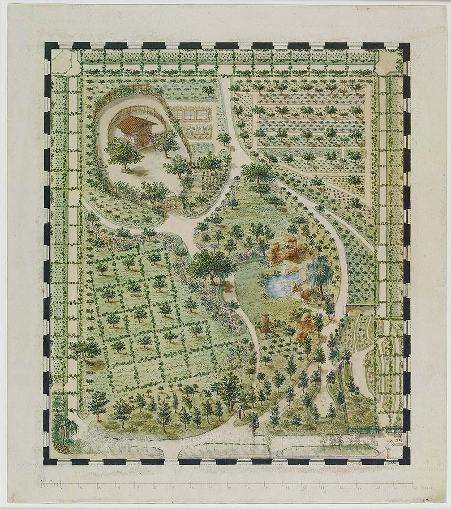
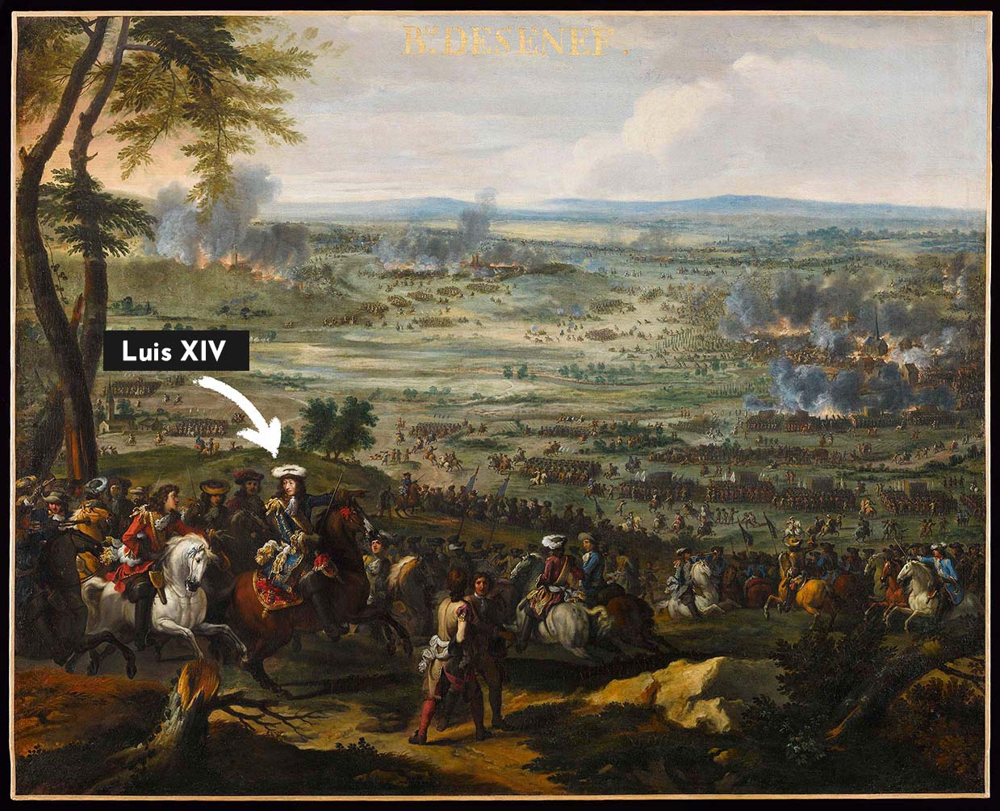
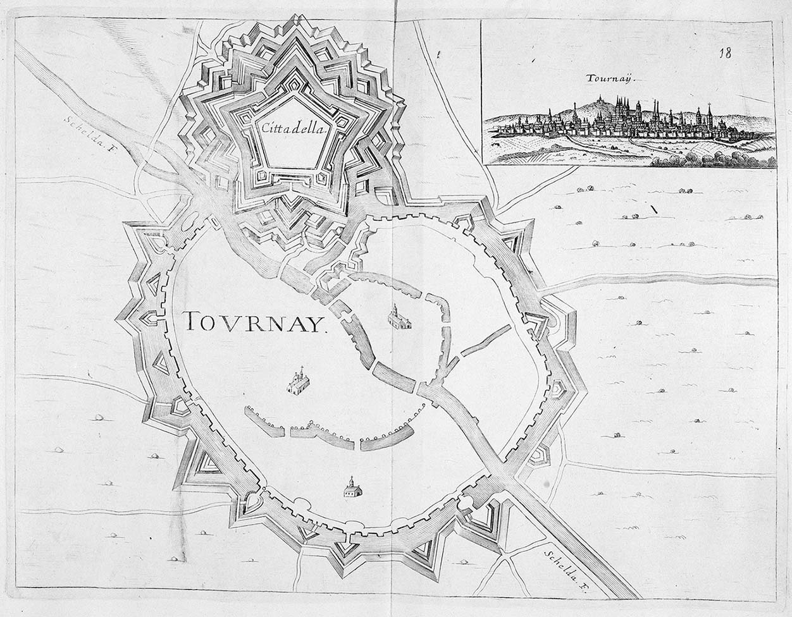
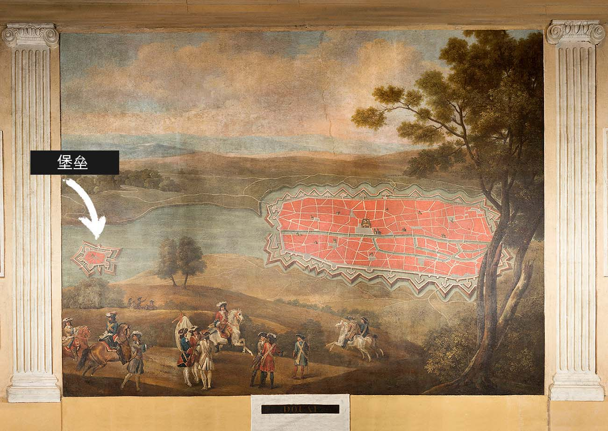
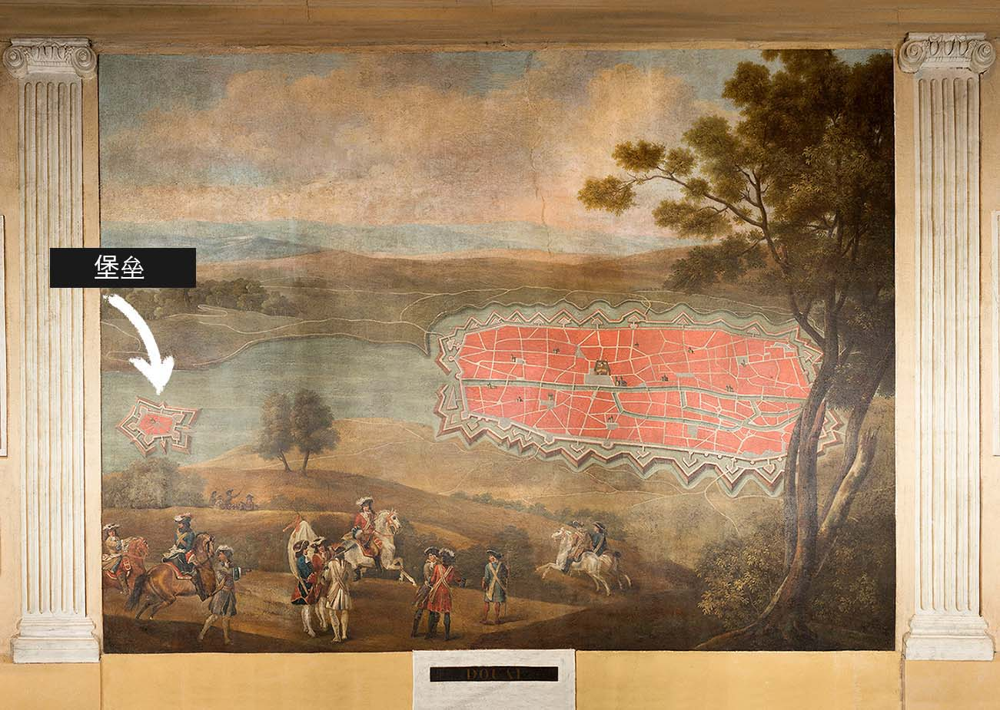
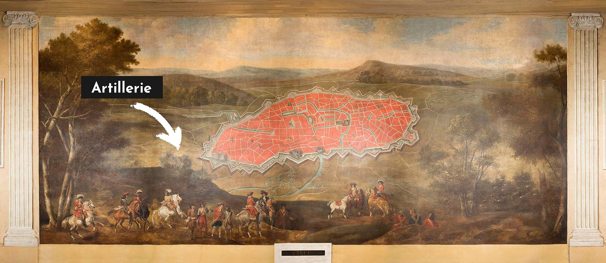
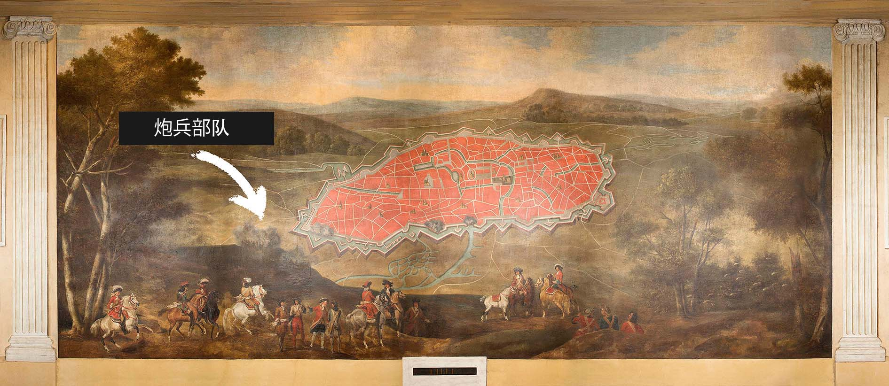
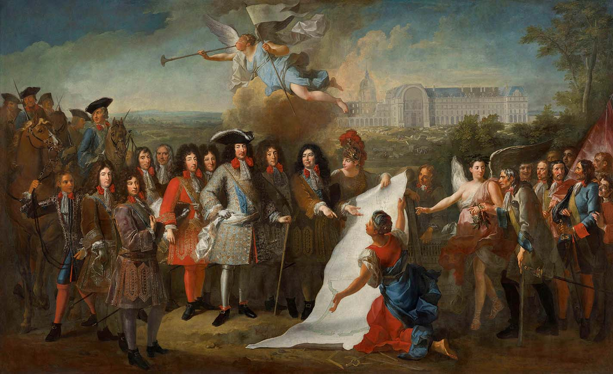
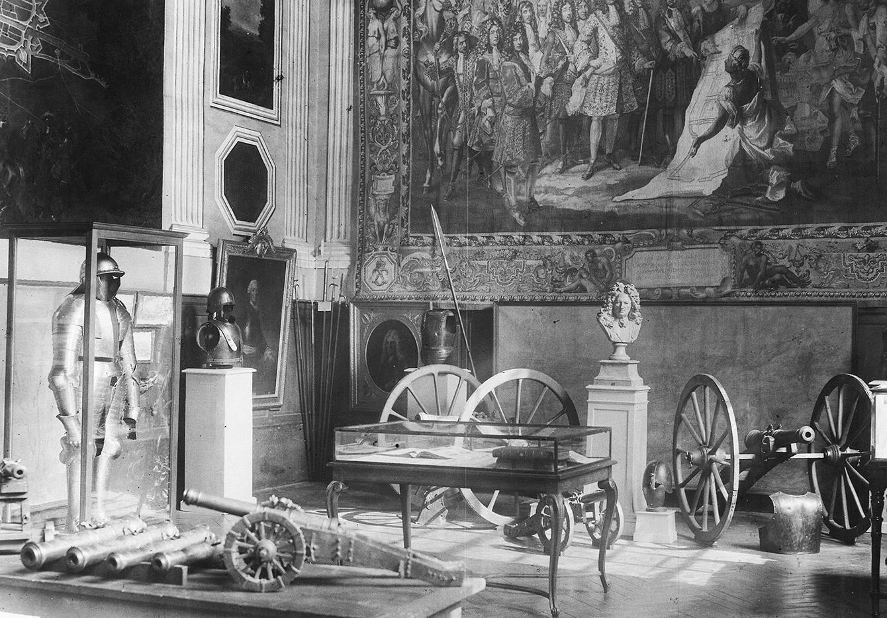
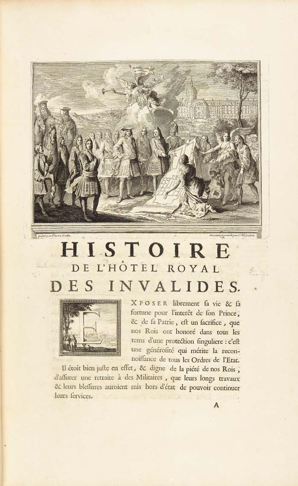

Introduction
Introduction
Introducción
简介
En savoir +
Read more
Más información
阅读更多
Des Gardes du corps de la Maison militaire du roi sont figurés à l’extrémité gauche du carton. La bandoulière de couleur bleue portée par l’officier au premier rang indique qu'il appartient à la 3ᵉ compagnie. Au cours de son règne, Louis XIV transforme la Maison militaire en un corps d'élite, chargé non seulement de la protection de la personne du roi, mais également des attaques les plus difficiles.
Bodyguards from the King's Military House appear on the far left of the tapestry cartoon. The blue strap worn by the officer in the front row indicates his affiliations to the 3ᵉ Compagnie. During his reign, Louis XIV transformed the Military House into an elite corps which, in addition to the protection of the king's person, was also charged with the most difficult attacks.
En el extremo izquierdo del cartón figuran algunos miembros de la guardia de la Casa Militar del Rey. La bandolera azul que lleva el oficial de la primera fila indica su pertenencia a la 3ª Compañía. Durante su reinado, Luis XIV transformó la Casa Militar en un cuerpo de élite, encargado de la protección del rey y de los ataques más difíciles.
国王的贴身侍卫被画在画面左头。前排的军官戴着蓝色背带表示他属于三连。路易十四在位期间，将贴身侍卫培养成精锐部队，不仅可以担负起保护国王人身安全的职责，还能打攻坚战。
Sept personnages gravitent autour du roi (1) qui domine par son tricorne et l’éclat argenté de ses vêtements.
À gauche, Monsieur (2) (1640-1701), frère du roi, duc d’Orléans, se distingue par le rouge prononcé de son habit.
À droite figure le Grand Dauphin Louis de France (3) (1661-1711), appelé Monseigneur, fils aîné de Louis XIV. Ce premier groupe forme, avec le roi, le noyau dynastique et monarchique de la composition.
Un deuxième groupe réunit trois grandes figures de l’histoire militaire du Grand Siècle. Entre le roi et Monsieur, apparaît le maréchal de Luxembourg (4) (1628-1695), dont les nombreuses victoires lui ont valu le nom de « tapissier de Notre-Dame » (la coutume voulait que les étendards pris à l’ennemi soient suspendus à la voûte de la cathédrale).
Plus à gauche, le maréchal de Turenne (5) (1611-1675), à la longue chevelure argentée, est représenté un an avant sa mort à la bataille de Salzbach. Héros de la bataille de Rocroi en 1643, Louis II de Bourbon-Condé (6) (1621-1686), dit le Grand Condé est reconnaissable à son célèbre nez aquilin et clôt la représentation des grandes figures militaires.
Le dernier groupe, à gauche devant les chevaux, se compose probablement des deux architectes qui se succèdent sur le chantier : Libéral Bruant (1636-1697) et Jules Hardouin-Mansart (7) (1646-1708). Ainsi, la monarchie, la guerre et l’architecture se partagent la paternité d’un édifice construit à leur propre gloire.
1/ Louis XIV, roi de France
2/ Monsieur, frère du Roi, duc d’Orléans
3/ Monseigneur, fils aîné de Louis XIV
4/ Maréchal de Luxembourg
5/ Maréchal de Turenne
6/ Grand Condé
7/ Libéral Bruant et Jules Hardouin-Mansart, architectes
Seven characters gravitate around the King (1), who dominates with his tricorn and the silver sheen of clothes.
On the left, Philippe de France (2) (1640-1701), known as Monsieur, Duke of Orléans and brother of the King, is characterised by the deep red colour of his outfit.
The Grand Dauphin Louis de France (3) (1661-1711), known as Monseigneur, eldest son of Louis XIV, appears on the right. This first group, which includes the King, forms the dynastic and monarchical core of the composition.
A second group brings together three great figures of the military history of the Grand Siècle. Marshal Luxembourg (4) (1628-1695), whose many victories earned him the nickname of "Upholsterer of Notre-Dame" (a reference to the custom where the standards taken from the enemy had to be hung from the Cathedral's vault) is depicted between the King and Monsieur.
Further to the left, Marshal Turenne (5) (1611-1675), who can be identified by his long silver hair, is represented one year before his death at the Battle of Salzbach. Louis II de Bourbon-Condé (6) (1621-1686), known as the Great Condé, hero of the Battle of Rocroi in 1643, is identifiable by his famous aquiline nose and thus concludes the representation of the great military figures.
The last group, on the left, in front of the horses, probably consists of the two architects who succeeded each other during the construction work : Libéral Bruant (1636-1697) and Jules Hardouin-Mansart (7) (1646-1708). Monarchy, war and architecture thereby share the paternity of an edifice built to their own glory.
1/ King Louis XIV of France
2/ Monsieur, Duke of Orléans
3/ Monseigneur, eldest son of Louis XIV
4/ Marshal Luxembourg
5/ Marshal Turenne
6/ Grand Condé
7/ Libéral Bruant and Jules Hardouin-Mansart, architects
Siete personajes gravitan en torno al rey (1), que domina la escena con su tricornio y el brillo plateado de su ropaje.
A la izquierda, Felipe de Francia (2) (1640-1701), conocido como Monsieur, duque de Orleans y hermano del rey, se distingue por el marcado color rojo de su traje.
A la derecha está el Gran Delfín Luis de Francia (3) (1661-1711), conocido como Monseigneur, hijo mayor de Luis XIV. Este primer grupo forma, con el rey, el núcleo dinástico y monárquico de la composición.
Un segundo grupo reúne a tres grandes figuras de la historia militar del llamado Grand Siècle. Entre el rey y Monsieur aparece el mariscal de Luxemburgo (4) (1628-1695), cuyas numerosas victorias le valieron el apelativo de « tapicero de Notre-Dame », una referencia a esa costumbre consistente en que los estandartes tomados al enemigo se colgaban en la bóveda de la catedral.
Más a la izquierda, el mariscal de Turenne (5) (1611-1675), identificable por su largo cabello plateado, aparece representado un año antes de su muerte en los campos de la batalla de Salzbach. Luis II de Borbón-Condé (6) (1621-1686), conocido como el Gran Condé y héroe de la batalla de Rocroi en 1643, es reconocible por su famosa nariz aguileña y cierra la representación de las grandes figuras militares.
El último grupo, situado a la izquierda frente a los caballos, está formado por los dos arquitectos que se sucedieron en la construcción: Libéral Bruand (1636-1697) y Jules Hardouin-Mansart (7) (1646-1708). Así, la monarquía, la guerra y la arquitectura comparten la paternidad de un edificio construido para su propia gloria.
1/ El rey Luis XIV
2/ Monsieur, Duque de Orleans
3/ Monseigneur, hijo mayor de Luis XIV
4/ Mariscal de Luxembourgo
5/ Mariscal de Turenne
6/ Grand Condé
7/ Libéral Bruant y Jules Hardouin-Mansart, arquitectos
国王身边围绕着七个人物，国王戴着三角帽 (1)，身穿银色衣服，十分显眼。
左边是王弟奥尔良公爵 (2)（1640-1701年）穿着一身大红色。
国王右边是大太子法兰西的路易 (3)（1661-1711年），即路易十四的长子。这一组人物，包括国王，代表了王朝核心人物和君主制。
第二组人物是路易十四治下三位重要军事家。国王和王弟之间是卢森堡元帅 (4)（1628-1695年），他在战场上立下的种种丰功伟绩为他赢得了“巴黎圣母院壁毯收集家”的称号，因为按照法国习俗，从敌人那里缴获的战利品军旗要挂在圣母院大教堂拱顶内供人观赏。
左边一头长长白发的是蒂雷纳元帅 (5)（1611-1675年），他在一年后的萨斯巴赫战役中捐躯。1643年 罗克鲁瓦战役中英勇战斗、人称“大孔代”的孔代亲王路易二世·德·波旁 (6)（1621-1686年）长着鹰钩鼻，很好辨认，他们三位代表了当时的杰出军事家。
最后一组人物位于画面左侧，马的身前，可能是两位先后担任荣军院建造监理的建筑师，利贝哈尔·布鲁昂（1636-1697年）和于勒·阿杜安-芒萨尔 (7)（1646-1708年）。这么解读的话，这幅画体现了君主制、战争和建筑艺术是如何联手为了自身荣耀而建造了荣军院。
1/ Louis XIV
2/ Duc d’Orléans
3/ Dauphin Louis de France
4/ Maréchal de Luxembourg
5/ Maréchal de Turenne
6/ Grand Condé
7/ Libéral Bruant and Jules Hardouin-Mansart
Le roi de France Louis XIV (1638-1715) est le bâtisseur de l’Hôtel des Invalides (1671-1706) et du château de Versailles (1661-1715).
Par la fondation des Invalides, le roi reconnaît et récompense la contribution des soldats à sa gloire militaire.
Sur ce tableau, il illustre ainsi deux vertus, la charité et la justice.
Son regard prend à témoin le spectateur et son corps est tourné vers le plan des Invalides (en 1670) et vers les premiers vétérans qui habitent l’Hôtel (en 1674).
Il est représenté plus grand que les autres, même si ce n’est pas la réalité.
Il s’appuie sur une canne, comme un maître de danse. Coiffé d’un tricorne rehaussé de plumes d’autruche et d’une perruque de longs cheveux bouclés, il porte une cravate en dentelle blanche et un ruban rouge autour du cou ; un habit de soie brodé de fil d’or à doublure rouge ; une écharpe blanche autour de la taille ; des bas de soie gris pour mettre en valeur ces jambes musclées de danseur.
Le bas de sa jambe gauche est orné d’un soleil filant surmonté d’une couronne. Des souliers aux boucles décorées de diamant et à rabat de cuir rouge complètent sa tenue.
Il meurt en 1715. A-t-il vu le carton de Dulin ? Mystère.
King Louis XIV of France (1638-1715) ordered the building the Hôtel des Invalides (1671-1706) and the château de Versailles (1661-1715).
Through the foundation of the Invalides, the King recognised and rewarded the soldiers's contribution to his military glory.
In this painting, two virtues are illustrated, that of charity and justice.
His gaze calls upon the viewer as a witness while his body is turned towards the plan of the Invalides that dates back to 1670, and the first veterans who inhabited the Hôtel from 1674.
He is represented as being taller than the others, even though this was, in fact, not the case, and is leaning on a cane, like a dancing master.
He is wearing a tricorn embellished with ostrich feathers and a wig with long, curly hair, a white lace tie and a red ribbon around his neck; a silk garment embroidered with gold threat and a red lining; a white sash around his waist; and grey silk stockings to highlight his muscular dancer's legs.
The bottom of his left leg is adorned with a shooting sun topped with a crown. Shoes with diamond buckles and red leather flaps complete his outfit.
While Louis XIV died in 1715, there is no certainty that he saw Dulin’s tapestry cartoon.
El rey Luis XIV (1638-1715) es el constructor del Hôtel des Invalides (1671-1706) y del palacio de Versalles (1661-1715).
Mediante la fundación del Hôtel des Invalides, el rey reconoce y recompensa la contribución de los soldados a su gloria militar.
En este cuadro ilustra así dos virtudes, la de la caridad y la de la justicia.
Su mirada toma al espectador como POIigo, mientras que su cuerpo está vuelto hacia el plano del Hôtel des Invalides de 1670 y hacia los primeros veteranos que viven en él desde 1674.
El soberano aparece más alto que los demás, aunque esto no refleja la realidad.
Se apoya en un bastón, como un maestro de danza. Lleva un tricornio adornado con plumas de avestruz y una peluca de cabello largo y rizado. Viste una corbata de encaje blanco y una cinta roja alrededor del cuello, un traje de seda bordado con hilo de oro con forro rojo, un pañuelo blanco en la cintura y medias de seda gris que le permiten lucir sus musculosas piernas de bailarín.
La parte inferior de su pierna izquierda está adornada con un sol tamizado, dominado por una corona. Los zapatos con hebillas decoradas con diamantes y con solapas de cuero rojo completan su atuendo.
Luis XIV murió en 1715 y no se sabe si vio el cartón de Dulin.
法国国王路易十四（1638-1715年）在位期间，下令建造荣军院（1671-1706年间）和凡尔赛宫（1661-1715年间）。
兴建荣军院是国王对投身于他领导的军事行动、实现文治武功的众多军人的嘉奖。
在这幅画上，国王的形象代表了仁慈和正义这两种美德。
他目光炯炯，看着观众，仿佛提醒他们注意画面上发生的一切，他的身体则朝着呈给他过目的荣军院建筑蓝图（1670年兴建）和首批有资格去休养的荣誉退伍军人（1674年进入荣军院治疗休养）。
画上的国王看起来比别人都高大，实际情况并非如此。
他像个舞蹈老师一样拄着手杖，头戴卷曲的长假发，上边是一顶鸵鸟毛装饰的三角帽，打着白色蕾丝领带，脖子上还系着红围巾。他身穿绣着金线的丝绸长上衣，红色衬里，腰间围一条白巾，灰色的丝袜紧紧包裹着他像舞蹈演员一样肌肉发达的腿。
他的左腿丝袜上有个戴王冠的会飞太阳装饰图案。鞋子搭扣设计用钻石装饰，脚踝处红色皮里子翻到外边。
国王于1715年去世，他生前到底见过迪兰画的这幅画没有，我们不得而知。
Au centre, sur un nuage au-dessus du roi, figure l’allégorie de la Renommée, qui tient une oriflamme blanche et souffle dans sa trompette pour annoncer la décision royale de bâtir un lieu de repos destiné aux glorieux soldats invalides.
In the centre, on a cloud towering above the King, the allegory of Fame is holding a white banner and blowing her trumpet to announce the royal decision to build a resting place for the glorious invalid soldiers.
En el centro, sobre una nube situada encima del rey, la alegoría de la Fama sostiene una oriflama blanca y toca su trompeta para anunciar la decisión real de construir un lugar de descanso destinado a los gloriosos soldados inválidos.
画面中间国王头顶的云朵上，是名誉女神举着白旗吹着号角，宣布国王决定为荣誉士兵建造一个疗养所。
Le peintre Pierre Dulin mêle langage allégorique et langage historique.
Sur la droite, la Victoire ailée et coiffée d’une couronne de laurier désigne de sa main droite les plans du monument en cours de construction à l’arrière-plan et ouvre le cortège des premiers invalides qui s’y dirigent.
L’un deux, légèrement voûté, s’appuie à la fois sur sa béquille, signe manifeste de son héroïsme, et sur le bras gauche de la Victoire orné de couronnes triomphales, signe de la gloire que lui procure sa blessure.
In his work, the painter Pierre Dulin combines allegory and historical language.
On the right, the winged Victory wearing a laurel wreath shows, with her right hand, the plans for the monument, which is being built in the background, and opens the procession for the first invalids who are to occupy the premises.
One of the two invalids is slightly hunched and is leaning both on his crutch — a clear sign of his heroism —, and on the Victory's left arm. He is adorned with triumphal wreaths, which is an indication that his injury is synonymous with glory.
En su obra, el pintor Pierre Dulin mezcla la alegoría con el lenguaje histórico.
A la derecha, la Victoria alada, coronada de laurel, señala con la mano derecha los planos del monumento, entonces en construcción, al fondo, y encabeza el cortejo de los primeros inválidos que se dirigen hacia allí.
Uno de los dos inválidos, ligeramente encorvado, se apoya a la vez en su muleta -señal manifiesta de su heroísmo- y en el brazo izquierdo de la Victoria, llevando coronas triunfales que muestran que su herida es sinónimo de gloria.
画家皮埃尔·迪兰这里同时使用了隐喻和历史两种表现手法语汇。
右边是展翅的胜利女神，她头戴桂冠，一边伸出右手，指着建筑平面图，那就是背景中正在建造的荣军院，她还一边迈步，领着首批有资格去疗养的伤残士兵列队前往荣军院。
伤残士兵中，有个微微弯腰拄着拐杖的，显然是个英勇作战的荣誉军人，他扶着胜利女神的左臂，她的左臂上挂着的凯旋桂冠，正是他为国负伤的嘉奖。
Les héros militaires sont aussi les hérauts (messagers) royaux et les Invalides, tant les hommes que les bâtiments, incarnent la gloire du roi et le triomphe de ses armées, dont les victoires récentes au cours de la guerre de Dévolution d'Espagne (1667-1668) et de la guerre de Hollande (1672-1678) sont célébrées sur les murs peints des quatre réfectoires de la cour d’honneur.
The royal heralds (messengers) and the Invalides – both men and buildings – are the military heroes that embody the glory of the King and the triumph of his armies. The victories at the end of the Spanish War of Devolution (1667–1668) and of the Franco-Dutch War (1672–1678) are also celebrated on the painted walls of the four refectories of the Main Courtyard.
Los heraldos (mensajeros) reales y los inválidos -tanto los hombres como los edificios- son los héroes militares que encarnan la gloria del rey y el triunfo de sus ejércitos. Las victorias al final de la guerra de Devolución de España (1667-1668) y de la guerra franco-holandesa (1672-1678) también se conmemoran en los muros pintados de los cuatro refectorios del patio de honor.
战场上的英雄也是国王的信使，荣军院的建筑和所有在里边疗养的军人，均代表着国王的荣耀和王家军队获得的大捷，如荣誉庭院四周的四个食堂墙上画着遗产战争（1667-1668年）和法荷战争（1672-1678年）期间胜利的场面。
Pierre Dulin s'inspire d’une peinture sur le thème de l’édification de l’Hôtel des Invalides que Charles Le Brun a réalisée au plafond de la galerie des Glaces du château de Versailles.
La déesse est représentée à la mode qui prévaut à l'époque de Louis XIV. Elle est coiffée d’un casque couronné de laurier et la tête de Méduse figure sur son égide (cuirasse magique fabriquée avec la peau de la chèvre Amalthée).
Au XVIIᵉ siècle, on emploie son nom romain, Minerve (Athéna en grec). Elle tient le plan des Invalides et son doigt est posé sur l’entrée de l’église royale, c'est-à-dire le Dôme.
Pierre Dulin drew inspiration from a painting on the theme of the construction of the Hôtel des Invalides which was made by Charles Le Brun on the ceiling of the Hall of Mirrors of the Château de Versailles.
The goddess is represented in the fashion that prevailed at the time of Louis XIV. She is wearing a helmet which is crowned with laurel and Medusa's head features on her aegis (magical armour made with the skin of the goat Amalthea).
Her Roman name, Minerva (Athena in Greek), was used during the 17th century. She is holding the plan of the Invalides and her finger is positioned on the entrance of the royal church, that is to say the Dôme.
Pierre Dulin se inspiró en una pintura sobre el tema de la construcción del Hôtel des Invalides que Charles Le Brun pintó en el techo de la Galería de los Espejos del Palacio de Versalles.
La diosa está representada según la moda imperante en la época de Luis XIV. Lleva un yelmo decorado con laurel cuya égida (coraza hecha con la piel de la cabra Amaltea) cubre la cabeza de Medusa.
Minerva -cuyo nombre romano predominaba en el siglo XVII sobre su equivalente griego, Atenea- sostiene el plano del Hôtel des Invalides mientras con su dedo indica la entrada de la iglesia real, es decir, el Domo.
皮埃尔·迪兰参考了夏尔·勒布伦在凡尔赛宫镜厅天花板上绘制的以荣军院建筑为主题的画，勒布伦画在椭圆框中的画用隐喻手法画了代表虔诚的女子。她给予身边围着的士兵嘉奖。她的手也指着荣军院的蓝图，蓝图由智慧及战争女神密涅瓦拿在手里。密涅瓦象征着国王的过人才智。
密涅瓦的装束是路易十四时代流行的打扮。她头戴饰有桂冠的头盔，用山羊阿玛尔忒娅的皮制成的魔力胸甲上饰有美杜莎的头。
十七世纪时人们习惯使用她的罗马名字密涅瓦，其实她就是希腊神话里的雅典娜。她拿着荣军院的建筑蓝图，手指就在王家教堂即圆顶教堂。
L’édification de l’Hôtel des Invalides est commandée par le Secrétaire d'État à la guerre Louvois et confiée à l’architecte Libéral Bruand. Tous deux sont présents sur la toile de Dulin.
Selon l’édit royal, le bâtiment est construit « pour le logement, subsistance & entretenement [entretien] de tous les Officiers & Soldats de nos Troupes, qui ont esté & seront estropiez, ou qui ayant vieilli dans le service en icelles, ne seront plus capables de Nous en rendre ».
La présentation de(s) plan(s) au roi se déroule également en 1670. Sur son carton, Dulin déroule le plan pour marquer la limite de cet épisode.
The construction of the Hôtel des Invalides was commissioned by Louvois, the Secretary of State for War, and entrusted to the architect Libéral Bruand. Both are represented in Dulin's painting.
According to the royal edict, the building was created to provide "accommodation, subsistence & maintenance of all Officers & Soldiers of our Troops, who have been & will be crippled, or those who have aged in service and will no longer be able to serve Us".
The presentation of the plan(s) to the King also took place in 1670. On his tapestry cartoon, Dulin rolled out the plan to mark the limit of this episode.
La edificación del Hôtel des Invalides, bajo la dirección del marqués de Louvois, secretario de Estado de Guerra, fue confiada al arquitecto Libéral Bruand. Ambos están presentes en el lienzo de Pierre Dulin.
Según el edicto real, el edificio se construye « para alojamiento, sustento y manutención de todos los Oficiales y Soldados de nuestras Tropas, que han sido y serán mutilados, o que, habiendo envejecido sirviendo en ellas, ya no puedan seguir prestándonos sus servicios ».
La presentación de los planos al rey tuvo lugar también en 1670. En su cartón, Dulin desenrolla el plano para marcar el límite de este episodio.
建造荣军院是由国防大臣卢福瓦侯爵全权负责的，设计师及监理是建筑师布鲁昂。他们俩都被迪兰画在油画上。
国王期望荣军院“能给那些为国服务的部队官兵，在因为年老或伤残而不再能为国服务之时，能有所居，有所养，有所依”。
同年，1670年，建筑蓝图呈给国王过目。迪兰绘制的油画上表现了这一时间点。
Pierre Dulin s'inspire d'une gravure de Daniel Marot pour représenter le Dôme des Invalides.
Ce qui le trahit c'est l'absence du 2ᵉ niveau de fenêtres sur le tambour du bâtiment qui correspond au premier projet de Jules Hardouin-Mansart en 1676.
Pierre Dulin drew inspiration from an engraving by Daniel Marot to depict the Dôme des Invalides.
The fact that it is missing the second level of windows on the drum of the building, which corresponds to the first project of Jules Hardouin-Mansart in 1676, is a giveaway.
Pierre Dulin se inspiró en un grabado de Daniel Marot para representar el Domo del Hôtel des Invalides.
Sin embargo, un elemento lo traicionó : la ausencia del segundo nivel de ventanas en el tambor del edificio, tal como preveía el primer proyecto de Jules Hardouin-Mansart, que data de 1676.
皮埃尔·迪兰是看了达尼埃尔·马洛绘制的荣军院版画来创作的。
因为他没有画三楼的那一排窗子，那是1676年于勒·阿杜安-芒萨尔的首个蓝图上画的。
Vue en perspective de l'élévation générale de l'Hôtel royal des Invalides,
Daniel Marot, fin XVIIᵉ début XVIIIᵉ siècle
© Paris - Musée de l'Armée, Dist. RMN-Grand Palais /
image musée de l'Armée
Perspective view of the general elevation of the Hôtel Royal des Invalides,
Daniel Marot, late 17th and early 18th century
© Paris - Musée de l'Armée, Dist. RMN-Grand Palais /
image musée de l'Armée
Ista en perspectiva del alzado general del Hôtel Royal des Invalides,
Daniel Marot, finales del siglo XVII y principios del XVIII
© Paris - Musée de l'Armée, Dist. RMN-Grand Palais /
image musée de l'Armée
皇家荣军院的总立面透视图,
丹尼尔-马罗，17世纪末和18世纪初
© Paris - Musée de l'Armée, Dist. RMN-Grand Palais /
image musée de l'Armée
Le Dôme de l'Hôtel des Invalides
© Paris - Musée de l'Armée, Dist. RMN-Grand Palais /
Anne-Sylvaine Marre-Noël
The Dôme of the Hôtel des Invalides
© Paris - Musée de l'Armée, Dist. RMN-Grand Palais /
Anne-Sylvaine Marre-Noël
El Domo del l'Hôtel des Invalides
© Paris - Musée de l'Armée, Dist. RMN-Grand Palais /
Anne-Sylvaine Marre-Noël
穹顶
© Paris - Musée de l'Armée, Dist. RMN-Grand Palais /
Anne-Sylvaine Marre-Noël
En 1671, la première pierre de la façade Nord est posée.
Le terrain sur lequel est construit l’Hôtel, la plaine de Grenelle, n’est pas très cher. Il y a très peu d’habitations.
Les ouvriers s’activent sur le chantier : ils transportent, scient ou taillent les blocs de pierre. D’autres utilisent des grues pour monter les matériaux.
Un échafaudage est visible sur la partie Est de la façade Nord. La partie Ouest semble terminée.
Le pavillon central n’est pas encore orné des statues de Louis XIV, Mars et Minerve.
Chronologiquement pourtant la partie Est a été terminée en premier.
In 1671, the first stone of the north facade was laid.
The land on which the Hôtel was built, the plain of Grenelle, was not very expensive while there were very few houses in the surrounding area.
The workers are busy on the building site: while some transport, saw or cut the stone blocks, others use cranes to lift the materials.
Scaffolding can be seen on the eastern side of the north facade. The western part appears to be finished.
The central pavilion is yet to be decorated with the statues of Louis XIV, Mars and Minerva.
However, according to the chronology, the eastern part was completed first.
En 1671 se coloca la primera piedra de la fachada norte.
El terreno en el que se construye el Hôtel, la llanura de Grenelle, no es muy caro y en sus alrededores hay pocas viviendas.
Los obreros trabajan en la obra de construcción: algunos transportan, aserran o cortan los bloques de piedra, mientras que otros usan grúas para elevar los materiales.
En la parte este de la fachada norte puede verse un andamio. La parte oeste parece terminada.
El pabellón central aún no está ornamentado con las estatuas de Luis XIV, Marte y Minerva.
Pero, según la cronología, esta parte se completó primero.
1671年荣军院北墙奠基。
从油画细节上可以看出，当时的巴黎没有达到现在的规模，荣军院选址格勒纳勒平地算是郊区，地皮并不很贵，也没有什么居民。
工地上的工人正忙碌着，有的运输石块，有的对其进行切割和修整，还有的用吊车把建材送往高处。
靠东的墙还搭着脚手架，西边似乎已经完工了
中间的楼上的雕像尚未到位，那是路易十四、战神玛尔斯、智慧女神密涅瓦等雕像。
但历史上，靠东的墙其实是先完工的。
À l’arrière-plan, derrière la façade Nord en cours de construction, se dresse déjà la silhouette du Dôme dont le décor de trophées d’armes et de statues est encore incomplet.
Le peintre Pierre Dulin anticipe grandement sur le développement du chantier, dans la mesure où, en 1674, le projet de Dôme n’est pas encore envisagé. Mais l’élévation majestueuse de sa calotte bleue et or, dominant les toits de Paris, en fait le symbole même des Invalides et l’élément le plus identifiable.
Construit à partir de 1677 par Jules Hardouin-Mansart, le Dôme est inauguré près de trente ans plus tard, le samedi 28 août 1706, par une journée pluvieuse, en présence du roi, de l’architecte et de la Cour.
In the background, behind the north facade which is still under construction, the silhouette of the Dôme is already visible, although the decorations, that consist of trophies of arms and statues, are still incomplete.
The painter Pierre Dulin greatly anticipated the development of the construction work, in so far as in 1674 the Dôme project had not yet been considered. However, the majestic height of its blue and gold calotte, overlooking the roofs of Paris, has become the very symbol of the Invalides of which it is the most identifiable element.
Jules Hardouin-Mansart began the construction of the Dôme in 1677. It was inaugurated almost thirty years later, on Saturday 28 August 1706, on a rainy day, in the presence of the King, the architect of the monument and some members of the Court.
Al fondo, detrás de la fachada norte, en construcción, ya se alza la silueta del Domo, cuya ornamentación con trofeos de armas y estatuas está incompleta.
El pintor Pierre Dulin se anticipa mucho al desarrollo de la obra, en la medida en que, en 1674, aún ni se contemplaba el proyecto del Domo. Sin embargo, la majestuosa cúpula azul y dorada que domina los tejados de París, es el símbolo del Hôtel des Invalides y su elemento más identificable.
Construido a partir de 1677 por Jules Hardouin-Mansart, el Domo fue inaugurado casi treinta años más tarde, el 28 de agosto de 1706, un día lluvioso, en presencia del rey, del arquitecto y de miembros la corte.
背景中正在修建的是北墙，后边能看到圆顶教堂的身影，但它上边战利品装饰和雕像等都还没全建起来。
画家皮埃尔·迪兰其实把它提前画了，因为1674年的时候尚未打算修建圆顶教堂。但它那雄伟的蓝金色圆顶是雄踞巴黎天际的壮观风景，也使它成为荣军院的象征和最容易辨认的元素。
圆顶由于勒·阿杜安-芒萨尔于1677年主持建造，一直修了差不多30年，终于在1706年8月28日星期六，细雨蒙蒙之中，由国王、建筑师、大臣们共同剪彩投入使用。
L’Allégorie de l’architecture est reconnaissable à ses attributs : une équerre, un compas, une règle, un porte-mine pour dessiner.
Le jeune apprenti tient également un porte-mine et s’appuie sur le chevalet qui supporte le plan. Un deuxième plan à demi roulé montre une façade des Invalides.
The Allegory of architecture is identifiable through his attributes : a set square, a compass, a ruler, a clutch pencil to draw.
The young apprentice is also holding a clutch pencil and is leaning on the easel used to support the plan. A second half-rolled plan shows one of the facades of the Invalides.
La disciplina de la arquitectura es reconocible por sus atributos: una escuadra, un compás, una regla y un portaminas para dibujar.
El joven aprendiz también sujeta un portaminas y se apoya en el caballete que sostiene el plano. Un segundo plano, medio enrollado, muestra una de las fachadas del Hôtel des Invalides.
建筑师的各种工具让人能很快认出他来：三角尺、圆规、尺子、绘图铅笔等。
一位年轻学徒拿着铅笔，靠在放置蓝图的画架上。还能看到一张表现荣军院正面墙壁的设计图。
Sur la droite du tableau, les soldats blessés s’apprêtent à découvrir les plans de l'hôpital en cours de construction dans la plaine de Grenelle.
Ces invalides y sont accueillis et soignés à partir d’octobre 1674.
Comme le mentionne le registre*, dès le 1ᵉʳ octobre 1670, année de la fondation de l’Hôtel royal des Invalides, les soldats sont hébergés dans «une maison louée au sieur d’Herval, rue du Chasse-Midi» (aujourd’hui rue du Cherche-Midi), en attendant la fin des travaux.
Parmi les dix-huit premiers inscrits du registre, le plus âgé : Pierre Ducros, a 79 ans et le plus jeune : Abraham Boulelay, dit L’Espine, a 24 ans.
*Registre de 1670-1674, du premier gouverneur des Invalides, François Lemaçon d’Ormoy (?-1677).
On the right-hand side of the painting, the wounded soldiers are about to discover the plans for the hospital being built in the plain of Grenelle.
This is where these invalids were taken in and cared for from October 1674.
In the register*, it was stated that from 1 October 1670, the year the Hôtel Royal des Invalides was founded, the soldiers were housed in a «house rented to Sir d’Herval on rue du Chasse-Midi» (nowadays rue du Cherche-Midi), while the work was being completed.
Among the first eighteen to be entered in the register were Pierre Ducros, the oldest, aged 79, and the youngest, Abraham Boulelay, known as L’Espine, aged 24.
*Register from 1670-1674, of the first governor of the Invalides, François Lemaçon d’Ormoy (?-1677).
A la derecha del cuadro, los soldados heridos se preparan para descubrir los planos del hospital, entonces en construcción en la llanura de Grenelle.
Los inválidos fueron albergados y atendidos allí desde octubre de 1674.
Como consta en el registro*, desde el 1 de octubre de 1670, año de la fundación del Hôtel Royal des Invalides, los soldados fueron alojados en «una casa alquilada al sieur d'Herval en la rue du Chasse-Midi» (hoy rue du Cherche-Midi), a la espera de la finalización de las obras.
Entre los dieciocho primeros inscritos en el registro, el mayor, Pierre Ducros, tiene 79 años y el menor, Abraham Boulelay, apodado L'Espine, tiene 24 años.
*Registro de 1670-1674, del primer gobernador del Hôtel des Invalides, François Lemaçon d'Ormoy (?-1677).
从右边走来的荣誉军人马上就要看到在格勒纳勒平地上建造的荣军院蓝图了。
他们从1674年10月起进入荣军院疗养。
据人员登记簿记载*，从荣军院奠基的1670年10月1日起，他们就获得安置，先住在“夏世米迪街从埃瓦爵爷那里租来的房子里”，等完工后迁入荣军院。
最先登记在册的18人中，年龄最大的是皮埃尔·迪克罗，79岁，最小的是“刺儿头”阿布拉罕·布雷莱，24岁。
*1670-1674年间制定的花名册，由荣军院首任院长弗朗索瓦·勒马松·多尔莫瓦（?-1677年）负责登记。
Cette huile sur toile intitulée L’Établissement de l’Hôtel royal des Invalides évoque plusieurs épisodes du chantier du bâtiment de 1671 à 1706. Le marquis de Louvois, Secrétaire d'État à la guerre, présente au roi de France Louis XIV le plan devant servir à la construction de l’Hôtel des Invalides.
This oil on canvas entitled L’Établissement de l’Hôtel royal des Invalides (The Establishment of the Hôtel Royal des Invalides) depicts several episodes of the construction of the building from 1671 to 1706. The Marquis de Louvois, Secretary of State for War, is seen presenting the plan for the construction of the Hôtel des Invalides to King Louis XIV of France.
L’Établissement de l’Hôtel royal des Invalides (El establecimiento del Hôtel Royal des Invalides) es un óleo sobre lienzo que evoca varios episodios de la construcción del edificio, que tuvo lugar entre 1671 y 1706. El marqués de Louvois, secretario de Estado para la Guerra, presenta al rey Luis XIV el plano que se utilizará para la construcción del Hôtel des Invalides.
这幅名为《兴建荣军院》的布面油画表现了1671年到1706年间荣军院建造的几个环节。战争大臣即国防大臣卢福瓦侯爵向路易十四展示建筑图纸。
Il s’agit d’un carton, c’est-à-dire la maquette en dimensions réelles permettant de tisser une tapisserie. Ce carton réalisé par le peintre Dulin, et donc la tapisserie, sont conçus pour raconter une histoire, divertir et instruire.
This is a cartoon, which is a full-size model used to weave a tapestry. Created by the painter Dulin, this cartoon (and thus the tapestry) was designed to tell a story, entertain and educate.
Se trata de un cartón, es decir el modelo en dimensiones reales que servirá para tejer un tapiz. Realizado por el pintor Pierre Dulin, este cartón (y por consiguiente el tapiz) está concebido para contar una historia, entretener e instruir.
这幅画其实是壁毯底版，即按照真实尺寸绘制，以便工匠在上边照着样子编织壁毯。油画由画家皮埃尔·迪兰创作，后来织造出的壁毯，构图都是叙事性的，借着讲故事来寓教于乐。
Le carton de tapisserie est l’œuvre du peintre Pierre Dulin (1669-1748), ancien élève de Jacques Friquet de Vauroze (1638-1716) et de Bon Boullogne (1649-1717), deux artistes qui participent activement au décor peint des réfectoires et du Dôme des Invalides. Pierre Dulin remporte le Grand Prix de Rome en 1698 et intègre l’Académie royale de peinture et de sculpture en 1707, ce qui lui ouvre ainsi la voie aux prestigieuses commandes royales. Si peu de tableaux de sa main sont connus, le musée de l’Armée conserve sa plus grande toile (3,53 m x 5,78 m) avec L’Établissement de l’Hôtel Royal des Invalides, 1674.
The tapestry cartoon is the work of the painter Pierre Dulin (1669-1748), a former pupil of Jacques-Antoine Friquet de Vauroze (1648-1716) and of Bon Boullogne (1649-1717), two artists who took an active part in the painted decor of the refectories and the Dôme des Invalides. Pierre Dulin won the Grand Prix de Rome in 1698 and joined the Académie Royale de Peinture et de Sculpture (Royal Academy of Painting and Sculpture) in 1707, which paved the way to prestigious royal commissions. Although few of his paintings are known, the Musée de l’Armée houses his largest painting (3.53 m x 5.78 m), L’Établissement de l’Hôtel Royal des Invalides (The Establishment of the Hôtel Royal des Invalides), 1674.
El cartón para tapiz es obra del pintor Pierre Dulin (1669-1748), discípulo de Jacques-Antoine Friquet de Vauroze (1648-1716) y de Bon Boullogne (1649-1717), dos artistas que participaron activamente en el desarrollo de la decoración con pinturas de los refectorios y del Domo del Hôtel des Invalides. En 1698, Pierre Dulin ganó el Premio de Roma y se incorporó a la Real Academia de Pintura y Escultura en 1707. Un paso que le abrió el camino a prestigiosos encargos reales. Si bien pocos de sus cuadros son conocidos, el Musée de l’Armée conserva su mayor lienzo (3,53 m x 5,78 m), L’Établissement de l’Hôtel Royal des Invalides, 1674.
壁毯底版油画是画家皮埃尔·迪兰（1669-1748年）所作，他是雅克·弗里凯·德·沃洛兹（1648-1716年）和邦·布洛涅（1649-1717年）两位画家的学生，这两位画家都大量参与荣军院食堂和圆顶教堂壁画创作。迪兰于1698年获罗马奖，1707年进入皇家绘画和雕塑学院，从此承接了不少王室钦定的作品。他的画作今天并不太为人所知，法兰西军事博物馆内收藏的《1674年荣军院建成》是他最大的画（3.53米x5.78米。
Il nous faut remonter au XVIIᵉ siècle pour voir l'Hôtel des Invalides construit sur un terrain en dehors des limites de la ville.
When it was built in the 17th century, the Hôtel des Invalides occupied land outside the city limits.
Téngase en cuenta que cuando se construyó, en el siglo XVII, el Hôtel des Invalides ocupaba un terreno fuera de los límites de la ciudad.
这是今天巴黎七区的地图，荣军院就在这个区。必须用十七世纪的地图才能看出荣军院是建在当时的市区之外。

Le roi de France Louis XIV achète un terrain dont une grande partie appartient à l'abbaye de Saint-Germain-des-Prés. Ces avantages sont multiples :
- ce terrain est moins cher parce qu'il est situé en dehors de la ville ;
- c'est en partie une ancienne zone de chasse, appelée «garenne» au Moyen Âge. L'évolution de la langue donne ensuite le mot «grenelle», nom qui donne son nom à la plaine ;
- ce terrain est également sur la route de Versailles, au sud-ouest de Paris. La proximité avec le palais des Tuileries, lieu du pouvoir, justifie aussi ce choix ;
- enfin, il est situé à proximité de la Seine.
King Louis XIV of France purchased a plot of land, most of which belonged to the Abbey of Saint-Germain-des-Prés. It had many advantages:
- The land was cheaper since it was located outside the city ;
- It was part of an old hunting area which was called "garenne" in the Middle Ages. The language evolved and the word changed to "grenelle", which gave its name to the plain ;
- This land was also on the way to Versailles, southwest of Paris. Its proximity to the Palais des Tuileries, seat of power, also justified this choice ;
- Finally, it was located near the River Seine.
El rey Luis XIV compró unas tierras, una gran parte de ellas pertenecientes a la abadía de Saint-Germain-des-Prés. Presentaban muchas ventajas :
- este terreno era más económico ya que se encontraba fuera de la ciudad ;
- era, en parte, una antigua zona de caza, llamada «garenne» (conejera) en la Edad Media. La evolución de la lengua dio luego la palabra «grenelle», término que da nombre a la llanura ;
- el terreno se encontraba en el camino a Versalles, al suroeste de París. La proximidad al Palacio de las Tullerías, lugar de poder, también justificaba esta elección ;
- por último, se encontraba cerca del Sena.
法国国王路易十四购买的地皮其中很大一部分属于圣日耳曼德普雷修道院。从许多方面来看都是一笔划算的买卖：
当时这块地皮位于市区之外，比较便宜；
地皮的一部分以前是狩猎区，中世纪叫做加莱纳，后来名字演化成格勒纳勒。
这个地方位于从巴黎出城往西南走去凡尔赛宫的路上，也离当时的王权中心杜伊勒利宫不远，选择这块地方国王自有道理。
最后一个理由是，它离塞纳河也很近。
« Le Roi partant à la guerre de Hollande ordonne la construction des Invalides ».
Description générale de l'Hôtel royal des Invalides
Robert Bonnart, 1683
© Paris - Musée de l'Armée, Dist. RMN-Grand Palais / Pascal Segrette
"The King leaving for the Dutch war orders the construction of the Invalides".
General description of the Hôtel Royal des Invalides
Robert Bonnart, 1683
© Paris - Musée de l'Armée, Dist. RMN-Grand Palais / Pascal Segrette
"El Rey que parte a la guerra de Holanda ordena la construcción de los Invalides".
Descripción general del Hôtel Royal des Invalides
Robert Bonnart, 1683
© Paris - Musée de l'Armée, Dist. RMN-Grand Palais / Pascal Segrette
"国王前往荷兰作战时下令建造荣军院"，
《荣军院皇家酒店描述》，
罗伯特-博纳特，1683年。
© Paris - Musée de l'Armée, Dist. RMN-Grand Palais / Pascal Segrette
La Seine, sorte de colonne vertébrale de la ville permet de transporter les matériaux plus rapidement et à moindre coût. La plupart des blocs de pierre provient des carrières de Saint-Leu et de Trossy dans la vallée de l'Oise. Le bois de chêne employé pour les travaux de charpenterie et de menuiserie est également indispensable pour bâtir les échafaudages du chantier.
The River Seine, which could be considered as the backbone of the city, made it quicker and cheaper to transport materials. Most of the stone blocks came from the Saint-Leu and Trossy quarries in the Oise valley. The oak wood used for the carpentry and joinery work was also essential to build the scaffolding for the building site.
El Sena, que podría considerarse la columna vertebral de la ciudad, permite transportar los materiales de forma más rápida y económica. La mayoría de los bloques de piedra provienen de las canteras de Saint-Leu y de Trossy, en el valle del Oise. La madera de roble, utilizada para la carpintería y la ebanistería, también es fundamental para la construcción de andamios en la obra.
塞纳河是巴黎市的交通要道，使用内河运输建材更快、成本更低。石块来自瓦兹河谷的圣勒和特罗西采石场。橡木也用水运送到工地，它不仅是梁柱、木构件的原材料，也用来搭脚手架。


L'Hôtel des Invalides en cours de construction, Adam Perelle, vers 1680
© Paris - Musée de l'Armée, Dist. RMN-Grand Palais / image musée de l'Armée
The Hôtel des Invalides under construction, Adam Perelle, ca. 1680
© Paris - Musée de l'Armée, Dist. RMN-Grand Palais / image musée de l'Armée
El Hôtel des Invalides en construcción, Adam Perelle, hacia 1680
© Paris - Musée de l'Armée, Dist. RMN-Grand Palais / image musée de l'Armée
建设中的建筑，亚当-佩雷尔，约1680年。
© Paris - Musée de l'Armée, Dist. RMN-Grand Palais / image musée de l'Armée
Après leur installation en octobre 1674, certains pensionnaires peuvent cultiver un lopin de terre autour du bâtiment. En 1679, l'architecte Jules Hardouin-Mansart dessine, côté nord, des fossés secs, qui accueillent des jardins potagers dans lesquels ils font pousser des légumes et des fruits.
Some of the residents that moved in as early as October 1674 were able to cultivate a plot of land around the building. In 1679, the architect Jules Hardouin-Mansart designed dry ditches on the north side, which were used as gardens to grow fruits and vegetables.
Tras su llegada en octubre de 1674, algunos residentes pudieron cultivar una parcela de tierra alrededor del edificio. Además, en 1679 el arquitecto Jules Hardouin-Mansart proyectó, en el lado norte, fosas secas para albergar huertos en los que los soldados del Hôtel des Invalides cultivaban frutas y verduras.
在1674年10月荣军院投入使用后，疗养的军人们还能在四周找一块土地来耕种。1679年，建筑师于勒·阿杜安-芒萨尔在荣军院北侧规划了几条大沟渠，用来种植蔬菜和水果。
Paris, Hôtel des Invalides, jardin fruitier, potager et d'agrément
Alexandre Théodore Brongniart, XVIIIᵉ siècle
© RMN-Grand Palais (musée du Louvre) / Martine Beck Coppola
Paris, Hôtel des Invalides, fruit, vegetable and pleasure garden
Alexandre-Théodore Brongniart, 18th century
© RMN-Grand Palais (musée du Louvre) / Martine Beck Coppola
París, Hôtel des Invalides, jardín de frutas, verduras y placer
Alexandre-Théodore Brongniart, siglo XVIII
© RMN-Grand Palais (musée du Louvre) / Martine Beck Coppola
巴黎，荣军院，水果、蔬菜和休闲花园
Alexandre-Théodore Brongniart，18世纪
© RMN-Grand Palais (musée du Louvre) / Martine Beck Coppola
La tenture (l’ensemble des tapisseries sur un même sujet) de L’Histoire du roi est entreprise en 1662. Elle est conçue pour glorifier Louis XIV à travers des événements marquants de son début de règne. Elle cherche à démontrer ses talents diplomatiques, sa bravoure militaire et son ambition pour les arts. Découvrez ci-après quelques unes de ces tentures.
The hangings (meaning all tapestries on a same subject) of the History of the King were undertaken in 1662. They were designed to glorify Louis XIV by depicting some of the events of his early reign. They were intended to demonstrate his diplomatic skills, military bravery and ambition for the arts. Discover some of these hangings below.
El proyecto de crear este conjunto de tapices sobre la historia del rey se puso en marcha en 1662. Fue concebido para glorificar a Luis XIV a través de los eventos que marcaron el comienzo de su reinado. Su objetivo era mostrar sus habilidades diplomáticas, su valentía militar y su interés por las artes. Descubra algunos de estos tapices a continuación.
《国王的历史》系列壁毯于1662年开始织造，旨在表现路易十四统治早期的重大事件，为其歌功颂德，主要赞扬国王高超的外交手腕、军事指挥上的雄才大略以及对文艺发展的关怀。
以下是这些挂毯中的一些。
Entre les années 1663 et 1673, les peintres Charles Le Brun (1619-1690) et Adam Frans Van der Meulen (1632-1690) composent les modèles des quatorze premières tapisseries. Les quatorze premiers tableaux évoquent le règne de 1654 à 1668. Le cycle commence par le sacre du roi (7 juin 1654). Cinq des tapisseries évoquent les premières victoires du jeune roi de 28 ans lors de la guerre de Dévolution qui oppose la France à l’Espagne. Différents peintres-cartonniers réalisent les cartons à partir de ces esquisses. La peinture ci-contre est réalisée par Van der Meulen et représente le roi Louis XIV à la bataille de Seneffe (1674) durant la guerre de Hollande (1672-1678).
Between 1663 and 1673, the painters Charles Le Brun (1619-1690) and Adam Frans Van der Meulen (1632-1690) produced the templates for the first fourteen tapestries. Several painters and cartoonists created the cartoons from these sketches. The first fourteen paintings depict his reign from 1654 to 1668. The cycle begins with the King's coronation, that took place on 7 June 1654. Five of the tapestries depict the young 28-year-old King's first victories during the War of Devolution between France and Spain. The painting opposite was made by Van der Meulen and depicts King Louis XIV at the Battle of Seneffe (1674) during the Franco-Dutch War (1672-1678).
Entre 1663 y 1673, los pintores Charles Le Brun (1619-1690) y Adam Frans Van der Meulen (1632-1690) elaboraron los modelos de los catorce primeros tapices. A partir de sus bocetos, diferentes pintores-cartonistas realizaron los cartones. Los primeros catorce cuadros abarcan el período de su reinado que se extiende desde 1654 hasta 1668. El ciclo comienza con la coronación del soberano, el 7 de junio de 1654. Cinco de estos tapices evocan las primeras victorias del joven rey, entonces de 28 años, durante la guerra de Devolución entre Francia y España. La pintura de enfrente es de Adam Frans van der Meulen y representa a Luis XIV comandando la batalla de Seneffe (1674) durante la guerra franco-holandesa (1672-1678).
1663年至1673年间，夏尔·勒布伦（1619-1690年）和亚当·弗兰斯·范德默伦（1632-1690年）等画家为前十四幅壁毯画了草图。然后由好几位壁毯底版画师根据草图绘制底版。这幅画为范德默伦所作，描绘了路易十四御驾亲征，参与法荷战争（1672-1678年）期间塞内夫战役（1674年）的场景。前十四幅画表现的都是1654年到1668年间国王统治时发生的事件。这个阶段从1654年6月7日国王的加冕典礼开始。其中五幅表现的是当时年仅28岁的青年君主在法国与西班牙之间进行的遗产战争（1667-1668年）期间获得的初期胜利。
Bataille de Seneffe (1674), Adam Frans Van der Meulen
© Paris - Musée de l'Armée, Dist. RMN-Grand Palais / Émilie Cambier
Battle of Seneffe (1674), Adam Frans Van der Meulen
© Paris - Musée de l'Armée, Dist. RMN-Grand Palais / Émilie Cambier
Batalla de Seneffe (1674), Adam Frans Van der Meulen
© Paris - Musée de l'Armée, Dist. RMN-Grand Palais / Émilie Cambier
塞内夫之战（1674年），亚当-弗兰斯-范德默伦
© Paris - Musée de l'Armée, Dist. RMN-Grand Palais / Émilie Cambier
La 9ᵉ tapisserie représente Louis XIV dans la tranchée au siège de Tournai (2 juin 1667). Vous voyez ci-dessous un plan de la fortification de la ville de Tournai en 1673, six ans après le siège. Dès août 1667, le roi a confié à un ingénieur militaire la charge de fortifier la ville. Observez la forme de la citadelle en pentagone (fort militaire à cinq bastions).
The 9th tapestry depicts Louis XIV in the trench at the siege of Tournai (2 June 1667). Below is a plan of the fortification of the city of Tournai in 1673, six years after the siege. In August 1667, the King entrusted the task of fortifying the city to a military engineer. As you can see, the citadel is in the shape of a pentagon (military fort with five bastions).
El noveno tapiz representa a Luis XIV en la trinchera durante el sitio de Tournai (2 de junio de 1667). Obsérvese, abajo, un plano de la fortificación de la ciudad de Tournai seis años después del sitio, en 1673. En agosto de 1667, el rey encomendó a un ingeniero militar la responsabilidad de fortificar la ciudad. Nótese la forma pentagonal de la ciudadela (fuerte militar con cinco baluartes).
第九幅壁毯表现的是身在图尔奈围城战（1667年6月2日）战壕中的路易十四。您看到的就是图尔奈城的要塞图，1673年即围城战后六年的样子。早在1667年8月，国王就下令军事工程师巩固防御、修建要塞。仔细观察带有五个防御堡垒的城墙那五星形棱堡的形状。
Planche 18 du « Théâtre de la Belgique ou description des dix sept provinces avec le plan des villes, et des principales forteresses »
de Gualdo Priorato, Vienne (Autriche), Michele Thurnmayer (imprimeur), 1673
© Paris - Musée de l'Armée, Dist. RMN-Grand Palais / Pascal Segrette
Plate 18 of "Theatre of Belgium or description of the seventeen provinces with the plan of the cities, and the main fortresses"
by Gualdo Priorato, Vienna (Austria), Michele Thurnmayer (printer), 1673
© Paris - Musée de l'Armée, Dist. RMN-Grand Palais / Pascal Segrette
Placa 18 del "Teatro de Bélgica o descripción de las diecisiete provincias con el plano de las ciudades, y las principales fortalezas"
de Gualdo Priorato, Viena (Austria), Michele Thurnmayer (impresor), 1673
© Paris - Musée de l'Armée, Dist. RMN-Grand Palais / Pascal Segrette
Gualdo Priorato的《比利时的故事》或《六个省份的描述以及村庄和主要堡垒的计划》的图版18，维也纳（奥地利，
Michele Thurnmayer（印刷商)，1673年
© Paris - Musée de l'Armée, Dist. RMN-Grand Palais / Pascal Segrette
La 10ᵉ tapisserie représente le siège de Douai (4 juillet 1667), que l’on retrouve sur les peintures murales du réfectoire nord-est de l’Hôtel des Invalides, dit salle Vauban, peintes à partir de 1678. Le peintre en est Jacques-Antoine Friquet de Vauroze (1648-1716). L’artiste représente la ville et la citadelle en position défensive, isolée par les eaux de la rivière de l’escarpe après l’ouverture des écluses.
The 10th tapestry represents the siege of Douai (4 July 1667), which can be seen on the mural paintings of the north-eastern refectory of the Hôtel des Invalides, known as the Vauban Room, painted from 1678. These paintings are the work of Jacques-Antoine Friquet de Vauroze (1648-1716) who depicted the city and the citadel in a defensive position, isolated by the waters of the Escarpe River after the opening of the locks.
El décimo tapiz representa el sitio de Douai (junio-julio de 1667), que también es el tema de las pinturas murales del refectorio noreste del Hôtel des Invalides, conocido como sala Vauban, pintadas a partir de 1678. Son obra de Jacques-Antoine Friquet de Vauroze (1648-1716) y representan la ciudad y la ciudadela en posición defensiva, aisladas por las aguas del río Scarpe tras la apertura de las esclusas.
第十幅壁毯表现的是杜埃围城战（1667年6月-7月)，在荣军院当时的东北方食堂即今日的沃邦展厅的壁画上也有表现。壁画作于1678年，由雅克·弗里凯·德·沃洛兹（1648-1716年）绘制，画了城里的情况和处于防御状态的要塞，城里人把河上闸门打开，放水灌满护城河。
 

Prise de la ville de Douai (juillet 1667), Jacques Antoine Friquet de Vauroze
© Paris - Musée de l'Armée, Dist. RMN-Grand Palais / Philippe Abergel
Capture of the town of Douai (July 1667), Jacques-Antoine Friquet de Vauroze
© Paris - Musée de l'Armée, Dist. RMN-Grand Palais / Philippe Abergel
Captura de la ciudad de Douai (julio de 1667), Jacques-Antoine Friquet de Vauroze
© Paris - Musée de l'Armée, Dist. RMN-Grand Palais / Philippe Abergel
攻占杜埃镇（1667年7月），雅克-安托万-弗里凯-德-沃洛泽
© Paris - Musée de l'Armée, Dist. RMN-Grand Palais / Philippe Abergel
La 12ᵉ tapisserie représente la prise de la ville de Lille (28 août 1667). Le peintre Friquet de Vauroze peint également la prise de la ville de Lille dans la salle Vauban. Il choisit le point de vue de l’armée royale française, c’est-à-dire l’assiégeant. Observez sur l’image l’épaisse fumée dégagée par les canons de Louis XIV au moment des tirs sur le quartier Saint-Sauveur, le 26 août. La tâche grise correspond aux impacts des boulets de canons qui ont atteint la ville. Au premier plan, parmi les cavaliers figure peut-être le jeune capitaine Vauban (1633-1707), ingénieur militaire, qui décide de la stratégie à adopter pour attaquer la ville. Cette dernière impressionne le roi qui nomme Vauban gouverneur de la citadelle de Lille et responsable de la construction des fortifications de l’ensemble du royaume de France.
The 12th tapestry depicts the capture of the city of Lille (28 August 1667). The painter Jacques-Antoine Friquet de Vauroze also painted the capture of the city of Lille in the Vauban Room. He chose to paint it from the perspective of the French Royal Army, who was the besieger. In the image, you will notice the thick smoke generated by Louis XIV's cannons as they were fired in the area of Saint-Sauveur, on 26 August. The grey patch represents the impacts of the cannonballs that hit the city. In the foreground, the young Captain Vauban (1633-1707), a military engineer who decided on the strategy to adopt to attack the city, may be among the horsemen. The King, who was impressed by it, appointed Vauban as the governor of the citadel of Lille and put him in charge of the construction of the fortifications of the entire Kingdom of France.
El decimosegundo tapiz representa la toma de la ciudad de Lille (28 de agosto de 1667). El artista Jacques-Antoine Friquet de Vauroze también pintó esta perspectiva en la sala Vauban para adoptar el punto de vista del ejército real francés, es decir, el sitiador. Obsérvese el espeso humo que sale de los cañones de Luis XIV durante los disparos, el 26 de agosto, en el barrio de Saint-Sauveur. La mancha gris corresponde a los impactos de las balas de cañón que han alcanzado a la ciudad. En primer plano y entre los jinetes, se encuentra el joven capitán Vauban (1633-1707), ingeniero militar, que decide la estrategia a adoptar para atacar la ciudad. El rey, impresionado por el talento de Vauban, lo nombró gobernador de la ciudadela de Lille y responsable de la construcción de las fortificaciones de todo el reino de Francia.
第十二幅壁毯表现的是1667年8月28日攻占里尔的场面。画家雅克·弗里凯·德·沃洛兹也在荣军院绘制了攻占里尔的场景，位于今日的沃邦展厅的墙上。他选择从法国军队即进攻者的视角来画。看看画上炮口冒出的那一股浓烟，那是8月26日路易十四的军队炮击城里圣索沃尔区。灰色的点是炮弹的弹痕。画面前景中那些骑士里可能就有年轻的沃邦上尉（1633-1707年）的身影，这位军事工程师决定进攻城池时要采取什么策略。他足智多谋，令国王赏识，于是任命他为里尔要塞总督，并负责为整个法兰西王国建造防御工事。
 Prise de la ville de Lille (27 août 1667), Jacques Antoine Friquet de Vauroze
© Paris - Musée de l'Armée, Dist. RMN-Grand Palais / Philippe Abergel
Capture of the city of Lille (27 August 1667), Jacques-Antoine Friquet de Vauroze
© Paris - Musée de l'Armée, Dist. RMN-Grand Palais / Philippe Abergel
Captura de la ciudad de Lille (27 de agosto de 1667), Jacques-Antoine Friquet de Vauroze
© Paris - Musée de l'Armée, Dist. RMN-Grand Palais / Philippe Abergel
攻占里尔城（1667年8月27日)，雅克-安托万-弗里凯-德-沃洛泽
© Paris - Musée de l'Armée, Dist. RMN-Grand Palais / Philippe Abergel
La 14ᵉ tapisserie représente Louis XIV menant le siège de Dôle (14 février 1668). La ville de Dôle se situe alors en Franche-Comté, territoire espagnol conquis par le Grand Condé, cousin de Louis XIV. Huit ans plus tard, la Franche-Comté offre un canon miniature au roi Louis XIV pour lui montrer sa loyauté, alors que le rattachement n’est effectif qu’en 1678, à la signature de la paix de Nimègue. Ce canon très richement décoré est présenté dans les cabinets insolites du musée de l’Armée. Observez sur l’affût du canon la représentation de la ville de Dôle au cours de l’attaque de février 1668, alors que de l’une des deux batteries de canons installée près des tranchées s’échappe un nuage de fumée au moment du tir. Plus de 1 000 personnes ont été mobilisées pour creuser les tranchées d’approche qui zigzaguent vers la ville.
The 14th tapestry depicts Louis XIV leading the siege of Dôle (14 February 1668). At the time, the city of Dôle was located in Franche-Comté, a Spanish territory conquered by the Great Condé, cousin of Louis XIV. Eight years later, Franche-Comté gifted a miniature cannon to King Louis XIV to show its loyalty, although the annexation only became effective in 1678, with the signing of the Nijmegen peace treaty. This very richly decorated cannon is displayed in the extraordinary cabinets of the Musée de l’Armée. You can see the city of Dôle during the February 1668 attack, as a cloud of smoke billows from one of the two cannon batteries positioned near the trenches as they fire. More than 1,000 people were mobilised to dig the approach trenches which zigzagged towards the city.
El decimocuarto tapiz muestra a Luis XIV dirigiendo el sitio de Dôle (14 de febrero de 1668). La ciudad de Dôle estaba situada en el Franco Condado, territorio español conquistado por el Gran Condé, primo de Luis XIV. Ocho años después, el Franco Condado regaló un cañón en miniatura al Rey Sol para demostrar su lealtad. Pero hubo que esperar hasta 1678, fecha de la firma de los tratados de Nijmegen, para que la anexión fuera efectiva. Este cañón, ricamente decorado, se exhibe en los Gabinetes Extraordinarios del Musée de l’Armée. Obsérvese la ciudad de Dôle durante el ataque de febrero de 1668: en el momento del disparo, una nube de humo se escapa de una de las dos baterías de cañones, instaladas cerca de las trincheras. Más de 1 000 personas fueron movilizadas para cavar las trincheras de aproximación que zigzagueaban hacia la ciudad.
第十四幅壁毯表现了路易十四在1668年2月14日指挥多勒攻城战。多勒当时属于弗朗什-孔泰，为路易十四的堂兄大孔代征服的西班牙领土。八年后，弗朗什-孔泰地区向国王路易十四献上一门大炮的小模型，以示忠诚，而这个地区正式归属法国则是1678年奈梅亨条约签署后。这门炮装饰华美，就在法兰西军事博物馆奇异陈列室中展出。仔细观察画上的1668年2月对多勒发起的进攻，战壕附近的两组炮中一组正在射击，浓烟滚滚。当时为了让军队接近城池，征用了1000多人去挖战壕
Canon offert à Louis XIV par le parlement de Franche Comté, à la suite du rattachement de cette province au royaume, 1676
© Paris - Musée de l'Armée, Dist. RMN-Grand Palais / Émilie Cambier
Canon offered to Louis XIV by the parliament of Franche-Comté, following the attachment of this province to the kingdom, 1676
© Paris - Musée de l'Armée, Dist. RMN-Grand Palais / Émilie Cambier
Canon ofrecido a Luis XIV por el parlamento del Franco Condado, tras la adhesión de esta provincia al reino, 1676
© Paris - Musée de l'Armée, Dist. RMN-Grand Palais / Émilie Cambier
弗朗什-孔泰省议会在该省归属王国后向路易十四提供的教规，1676年
© Paris - Musée de l'Armée, Dist. RMN-Grand Palais / Émilie Cambier
En 1710, à la fin de sa vie, Louis XIV souhaite compléter le cycle des quatorze tapisseries par d’autres épisodes de son règne. Les trois tapisseries supplémentaires réalisées dans les années 1710 s’éloignent de la représentation guerrière. La 15ᵉ tapisserie évoque l’établissement de l'Hôtel royal des Invalides (1670-1706), sur laquelle figure la date de 1671. Cette dernière est tissée en haute-lisse dans l’atelier de Louis Ovis De la Tour à la manufacture des Gobelins, de 1716 à 1725. Elle est aujourd’hui conservée au Mobilier national. En 1717, deux ans après l’achèvement du carton (modèle pour la tapisserie), Pierre Dulin est chargé de restaurer les peintures murales de la salle Royale des Invalides, peintes par Joseph Parrocel.
In 1710, at the end of his life, Louis XIV decided he wanted to complete the cycle of fourteen tapestries with other episodes of his reign. The three additional tapestries created in the 1710s moved away from the representation of war. The 15th tapestry evokes the establishment of the Hôtel Royal des Invalides (1670-1706), on which the date of 1671 is visible. It was woven in high-warp in the workshop of Louis Ovis de la Tour at the Manufacture des Gobelins from 1716 to 1725. It is now kept at the Mobilier National. In 1717, two years after the completion of the tapestry cartoon. Pierre Dulin was commissioned to restore the murals of the Royal Room at the Invalides, which were painted by Joseph Parrocel.
En 1710, al final de su vida, Luis XIV quiso completar el ciclo de los catorce tapices con otros episodios importantes de su reinado. Los tres tapices adicionales, realizados en la década de 1710, se alejan de la representación de la guerra, como el decimoquinto tapiz, que representa la fundación del Hôtel Royal des Invalides (1670-1706) y en el que aparece la fecha de 1671. Fue tejido, entre 1716 y 1725, en alto lizo en el taller de Louis Ovis de la Tour en la manufactura de los Gobelinos y actualmente se conserva en el Mobilier National. En 1717, dos años después de la finalización del cartón (modelo para el tapiz), Pierre Dulin recibió el encargo de restaurar las pinturas murales de Joseph Parrocel en la sala real del Hôtel des Invalides.
1710年，晚年的路易十四希望在他还在王位上的时候能看到这套共十四幅壁毯完成。1710年后制作的三幅壁毯不再以战争为主题。第十五幅表现的是建造荣军院（1670-1706年）的场景，壁毯上的日期为1671年，它由戈布兰挂毯织造厂路易·奥维·德拉图尔工坊制造，1716年开工，1725年完工，现保存在法国家具管理中心。1717年，即壁毯底版油画完成两年后，画家皮埃尔·迪兰奉命修复位于今日王室展厅内由约瑟夫·帕罗塞尔绘制的荣军院食堂壁画。
En 1710, le peintre Pierre Dulin (1669-1748) est chargé de la conception d’un carton de tapisserie représentant la fondation des Invalides. Le carton de tapisserie est une maquette peinte, conçue comme un tableau, en dimensions réelles, servant de modèle pour tisser une tapisserie. Pierre Dulin achève ce carton en 1715, alors que le roi décède le 1ᵉʳ septembre de la même année. Il n'est pas sûr que le roi ait vu cette composition avant son décès. L'œuvre est livrée en avril 1717 à l'administration royale.
In 1710, the painter Pierre Dulin (1669-1748) was commissioned to design the tapestry cartoon representing the foundation the Invalides. A tapestry cartoon is a full-size painted model, designed like a painting, which is used as a template to weave a tapestry. Pierre Dulin completed this tapestry cartoon in 1715. The King died on 1 September of the same year: whether or not he saw this composition before his death is still a mystery. The artwork was delivered to the royal administration in April 1717.
En 1710, el pintor Pierre Dulin (1669-1748) recibió el encargo de realizar un cartón de tapiz que representara la fundación del Hôtel des Invalides. El cartón para tapiz es una maqueta pintada en dimensiones reales, diseñada a modo de cuadro y que sirve de modelo para tejer un tapiz. Pierre Dulin completó este cartón en 1715. El rey Luis XIV falleció el 1 de septiembre del mismo año y no se sabe si pudo llegar a ver esta composición antes de su muerte. La obra fue entregada en abril de 1717 a la administración real.
1710年，画家皮埃尔·迪兰（1669-1748年）奉国王之命为一幅表现荣军院建造的壁毯绘制底版。所谓壁毯底版就是一幅画，尺寸要跟后来织造的壁毯一样大，方便织工照着样子编织壁毯。1715年迪兰完成底版油画，而路易十四于同年9月1日驾崩，所以我们不能确定国王生前是否亲眼看到了画。1717年4月迪兰将油画交给政府。
Le prix de la commande est fixé à 4000 livres, en 1710, ce qui correspond à environ 86 000 euros. L'artiste reçoit tout d'abord 200 livres, environ 4000 euros, le 10 mai 1710, à la livraison d'un premier dessin. Il perçoit les 3800 livres restantes (environ 82 000 euros) en octobre 1719, soit deux ans après la livraison du carton.
The price for the commission was set at 4,000 French livres, in 1710, which amounts to approximately 86,000 euros. Initially, the artist received 200 French livres (around 4,000 euros) on 10 May 1710, upon the delivery of a first drawing. He was paid the remaining 3,800 French livres (approximately 82,000 euros) in October 1719, two years after the tapestry cartoon was delivered.
En 1710, el precio del encargo se fijó en 4 000 libras, lo que corresponde a unos 86 000 euros. El artista recibió como primer pago 200 libras (unos 4 000 euros) el 10 de mayo de 1710, fecha de entrega del primer dibujo. Recibió las 3 800 libras restantes (unos 82 000 euros) en octubre de 1719, dos años después de la entrega del cartón.
说好的价格是4000里弗尔，1710年的法国货币，换算到今天的购买力，相当于86000欧元左右。1710年5月10日，第一幅草图交付后，画家收到了200里弗尔，约合4000欧元。1719年10月，即油画交付两年后，他拿到余款3800里弗尔，约合82000欧元。

Tombeau du maréchal Turenne (1611-1675), dans le Dôme des Invalides
Gaspard Marsy (1624-1681) & Jean Baptiste Tuby (1635-1700)
© Paris - Musée de l'Armée, Dist. RMN-Grand Palais / Caroline Rose
Tomb of Marshal Turenne (1611-1675),
Gaspard Marsy (1624-1681) & Jean-Baptiste Tuby (1635-1700)
© Paris - Musée de l'Armée, Dist. RMN-Grand Palais / Caroline Rose
Tumba del mariscal Turenne (1611-1675),
Gaspard Marsy (1624-1681) y Jean-Baptiste Tuby (1635-1700)
© Paris - Musée de l'Armée, Dist. RMN-Grand Palais / Caroline Rose
图雷纳元帅（1611-1675）
加斯帕德-马西（1624-1681）和让-巴蒂斯特-图比（1635-1700）的墓
© Paris - Musée de l'Armée, Dist. RMN-Grand Palais / Caroline Rose
Écu (monnaie) représenté sur le tombeau du maréchal de Turenne (1611-1675)
Avers : LOVIS . XIIII . ROY . DE . FR . ET . DE . NAV. = Louis XIV roi de France et de Navarre. Louis XIV représenté en buste cuirassé à droite avec une cravate.
Revers : SIT. NOMEN. DOMINI .BENEDICTVM. 1675 = « Béni soit le nom du Seigneur 1675 (date de la mort du maréchal de Turenne) »
Ecu (coin) depicted on the tomb of Marshal de Turenne (1611-1675)
Obverse: LOVIS . XIIII . ROY . DE . FR . AND . DE . NAV. = Louis XIV king of France and Navarre. Louis XIV represented in cuirassed bust right with a tie.
Reverse: SIT. NOMEN. DOMINI. BENEDICTVM. 1675 = "Blessed be the name of the Lord 1675 (date of the death of Marshal de Turenne)"
Ecu (moneda) representado en la tumba del mariscal de Turenne (1611-1675)
Anverso: LOVIS . XIIII . ROY . DE . FR . Y . DE . NAV. = Luis XIV rey de Francia y Navarra. Luis XIV representado en busto coracero a la derecha con corbata.
Reverso: SIT. NOMEN. DOMINI. BENEDICTVM. 1675 = "Bendito sea el nombre del Señor 1675 (fecha de la muerte del mariscal de Turenne)"
图雷恩元帅（1611-1675）墓上描绘的Ecu（硬币）。
正面：LOVIS . XIIII . ROY . DE . FR . et . DE . NAV. = 法国和纳瓦拉国王路易十四。路易十四代表的是带领带的半身铜像，右边是领带。
R反面：SIT. NOMEN. DOMINI .BENEDICTVM. 1675 = 愿主的名字保佑1675年（德-图伦元帅的死亡日期）"
De 1716 à 1725, une tapisserie est tissée d’après le carton de Dulin à la manufacture royale des Gobelins, dans l’atelier de Louis Ovis De la Tour. Cette tapisserie est d'ailleurs exposée au musée de l'Armée en 1933 comme en témoigne cette photographie en noir et blanc.
From 1716 to 1725, a tapestry was woven from Dulin's tapestry cartoon at the Manufacture Royale des Gobelins, in the workshop of Louis Ovis de la Tour. This tapestry was also exhibited at the Musée de l'Armée in 1933, as this black and white photograph shows.
Entre 1716 y 1725, se tejió un tapiz a partir del cartón de Dulin en la manufactura real de los Gobelinos, en el taller de Louis-Ovis de la Tour. En 1933, este tapiz se exhibía en el Musée de l'Armée, como lo demuestra esta fotografía en blanco y negro.
从1716年到1725年，戈布兰挂毯织造厂路易·奥维·德拉图尔工坊的织工们按照迪兰的油画底版编织出壁毯。壁毯于1933年在法兰西军事博物馆展出过，有这张黑白照片为证。
Tapisserie d’après le carton de Dulin présentée lors de l’exposition organisée au musée de l'Armée (actuelle salle Vauban) dans le cadre du tricentenaire de Vauban (31 mai-12 juillet 1933)
© Musée de l'Armée
Tapestry after Dulin's cartoon presented during the exhibition organised at the Musée de l'Armée (now the Salle Vauban) as part of the tercentenary of Vauban (31 May - 12 July 1933)
© Musée de l'Armée
Tapiz del cartón de Dulin presentado durante la exposición organizada en el Musée de l'Armée (actual Sala Vauban) en el marco del tricentenario de Vauban (31 de mayo - 12 de julio de 1933)
© Musée de l'Armée
作为沃邦三百周年纪念活动的一部分，在博物馆（现在的沃邦厅）举办的展览中展出的挂毯（1933年5月31日至7月12日）。
© Musée de l'Armée
La réalisation de l'œuvre nécessite au moins quatre étapes : Dulin commence par un dessin préparatoire (H. 0,32 m x L. 0,49 m), qui lui permet de peindre un modello, c'est-à-dire une maquette très poussée (H. 0,48 m x L. 0,74 m) qui sert de modèle pour l'exécution du carton (H. 3,53 m x L. 5,77 m, soit une surface de plus de 20 m2). Enfin, à partir du carton, la manufacture des Gobelins tisse la tapisserie (H. 5,05 m x L. 6,65 m).
At least four stages were required for the creation of this artwork : Dulin began with a preparatory drawing (H. 0.32 m x L. 0.49 m), which enabled him to paint a modello, a very detailed model (H. 0.48 m x L. 0.74 m) which was used as a template for the creation of the tapestry cartoon (H. 3.53 m x L. 5.77 m, that is a surface area of more than 20 m2). Finally, the Manufacture des Gobelin used the cartoon to weave the tapestry (H. 5.05 m x L. 6.65 m).
Para la realización de la obra fue necesario un trabajo en cuatro etapas: Dulin empezó con un dibujo preparatorio (alto 0,32 m x ancho 0,49 m), que le permitió pintar un modello(alto 0,48 m x ancho 0,74 m), une maqueta muy desarrollada que sirvió para la ejecución del cartón (alto 3,53 m x ancho 5,77 m, o sea una superficie de más de 20 m2). Finalmente, a partir de este cartón, la manufactura de los Gobelinos tejió el tapiz (alto 5,05 m x ancho 6,65 m).
画这幅油画至少有四个步骤：迪兰先勾一个草图（0.32米x0.49米）用来构图，从这个基础上他再画一幅仔细习作，即比较接近最终构图的画（0.48米x0.74米），根据它来画油画底版（3.53米x5.77米，总面积20平米有余）。最后，戈布兰挂毯织造厂用底版来编织壁毯，壁毯高5.05米，宽6.65米）。
Modello de L’établissement de l’Hôtel des Invalides, 1716-1724
© Château de Versailles, Dist. RMN-Grand Palais / Christophe Fouin
Modello of the Établissement de l’Hôtel des Invalides, 1716 - 1724
© Château de Versailles, Dist. RMN-Grand Palais / Christophe Fouin
Modello de L’établissement de l’Hôtel des Invalides, 1716 - 1724
© Château de Versailles, Dist. RMN-Grand Palais / Christophe Fouin
模型
© Château de Versailles, Dist. RMN-Grand Palais / Christophe Fouin

Carton de L’établissement de l’Hôtel des Invalides, 1710-1715
© Paris - Musée de l'Armée, Dist. RMN-Grand Palais / Stéphane Maréchalle / Mathieu Rabeau
Tapestry cartoon of the Établissement de l’Hôtel des Invalides, 1710 - 1715
© Paris - Musée de l'Armée, Dist. RMN-Grand Palais / Stéphane Maréchalle / Mathieu Rabeau
Cartón de L’établissement de l’Hôtel des Invalides, 1710 - 1715
© Paris - Musée de l'Armée, Dist. RMN-Grand Palais / Stéphane Maréchalle / Mathieu Rabeau
表
© Paris - Musée de l'Armée, Dist. RMN-Grand Palais / Stéphane Maréchalle / Mathieu Rabeau

Tapisserie de L’établissement de l’Hôtel des Invalides, 1716-1724
© RMN-Grand Palais (Château de Versailles) / Christian Jean / Jean Schormans
Tapestry of the Établissement de l’Hôtel des Invalides, 1716 - 1724
© RMN-Grand Palais (Château de Versailles) / Christian Jean / Jean Schormans
Tapiz de L’établissement de l’Hôtel des Invalides, 1716 - 1724
© RMN-Grand Palais (Château de Versailles) / Christian Jean / Jean Schormans
挂毯
© RMN-Grand Palais (Château de Versailles) / Christian Jean / Jean Schormans
Jusqu’en 1825, le carton de Dulin est conservé par la manufacture des Gobelins. Il est transféré cette année-là au château de Versailles.
En 1907, le carton est mis en dépôt au musée de l’Armée ouvert depuis 1905.
Jusqu’en 1938, il est présenté dans le grand réfectoire nord-ouest de l’Hôtel des Invalides, actuelle salle Royale.
En 1994, il est transféré dans le Dôme des Invalides et placé dans la chapelle Saint-Jérôme jusqu'en 2008. En 2022, après sa restauration, le carton retrouve la salle Royale. En 2024, il est exposé dans la salle Vauban, au sein du parcours consacré à l'histoire de l'Hôtel des Invalides.
The tapestry cartoon was kept by the Manufacture des Gobelins until 1825. During that year, it was transferred to the Château de Versailles.
In 1907, the tapestry cartoon was deposited in the Musée de l’Armée, which had been opened since 1905.
Until 1938, it was displayed in the large north-western refectory of the Hôtel des Invalides, currently the Royal Room.
In 1994, it was transferred to the Dôme des Invalides, in the Chapel of Saint-Jérôme until 2008. In 2022, once it had been restored, it was returned to the Royal Room. In 2024, it will be exhibited in the Vauban Room, as part of a tour dedicated to the history of the Hôtel des Invalides.
El cartón de Dulin se mantuvo en la manufactura de los Gobelinos hasta 1825 y ese mismo año fue trasladado al Palacio de Versalles.
En 1907, el cartón fue depositado en el Musée de l’Armée, creado en 1905.
Se instaló en el gran refectorio noroeste del Hôtel des Invalides, la actual sala real, donde estuvo hasta 1938.
En 1994 fue trasladado al Domo, concretamente a la capilla de Saint-Jérôme, donde estuvo hasta 2008. En 2022, tras su restauración, el cartón ha vuelto a su lugar en la sala real. En 2024, se exhibirá en la sala Vauban, como parte del recorrido dedicado a la historia del Hôtel des Invalides.
底版一直到1825年都是由戈布兰挂毯织造厂保管，后转移到凡尔赛宫保存。
1907年，又转到1905年开放的军事博物馆仓库中保存。
直到1938年，它才在荣军院西北方的大食堂，即今天的王室展厅中与观众见面。
1994年，它到了荣军院圆顶教堂内的哲罗姆礼拜堂，直到2008年。2022年修复后重返王室展厅。2024年将在沃邦展厅展出，作为荣军院历史介绍展品的一部分。
Le carton présenté en salle Royale entre 1938 et 1994
© Paris - Musée de l'Armée, Dist. RMN-Grand Palais / image musée de l'Armée
The tapestry cartoon presented in the Salle Royale between 1938 and 1994
© Paris - Musée de l'Armée, Dist. RMN-Grand Palais / image musée de l'Armée
El cartón presentado en la Sala Real entre 1938 y 1994
© Paris - Musée de l'Armée, Dist. RMN-Grand Palais / image musée de l'Armée
1938年至1994年期间在皇家厅展出的画作
© Paris - Musée de l'Armée, Dist. RMN-Grand Palais / image musée de l'Armée
Le carton présenté dans le Dôme (chapelle Saint-Jérôme), 2000
© Musée de l’Armée, Sylvie Picolet
The tapestry cartoon presented in the Dôme (St Jerome's Chapel), 2000
© Paris - Musée de l'Armée, Dist. RMN-Grand Palais / image musée de l'Armée
El cartón presentado en el Domo (capilla de Saint-Jérôme), 2000
© Paris - Musée de l'Armée, Dist. RMN-Grand Palais / image musée de l'Armée
穹顶上的画（圣杰罗姆礼拜堂，2000年
© Musée de l’Armée, Sylvie Picolet
Plan scénographique de la présentation du carton en salle Royale à partir de 2022
© Flavio Bonuccelli
Scenographic plan for the presentation of the tapestry cartoon in the Salle Royale from 2022
© Paris - Musée de l'Armée, Dist. RMN-Grand Palais / image musée de l'Armée
Plan escenográfico para la presentación del cartón en la Sala Real a partir de 2022
© Paris - Musée de l'Armée, Dist. RMN-Grand Palais / image musée de l'Armée
计划从2022年起在皇家大厅展示该画作
© Flavio Bonuccelli
En 1736, le graveur Charles Nicolas Cochin (1688-1754) reprend le carton de Dulin dans une gravure qui paraît dans le livre de Jean-Joseph Granet sur l'histoire des Invalides. Cette image devient le symbole de la fondation et de la construction des Invalides. Elle est largement publiée dans les ouvrages consacrés au site jusqu'à récemment.
In 1736, the engraver Charles-Nicolas Cochin (1688-1754) used Dulin's tapestry cartoon for an engraving which featured in Jean-Joseph Granet's book on the history of the Invalides. This image became the symbol of the foundation and of the construction of the Invalides. Until recently, it was widely published in books about the site.
En 1736, el grabador Charles-Nicolas Cochin (1688-1754) reprodujo el cartón de Dulin en un grabado que posteriormente apareció en un libro de Jean-Joseph Granet dedicado a la historia del Hôtel des Invalides. Esta imagen se convirtió en el símbolo de la fundación y la construcción del Hôtel des Invalides. Hasta hace poco, se publicaba a menudo en obras dedicadas al monumento.
1736年，铜版画家夏尔·尼古拉·科善（1688-1754年）将迪兰的油画底版复刻成铜版画，收录在让-约瑟夫·格拉奈撰写的有关荣军院历史的著作中。这幅画从而成为荣军院奠基及建设的象征。不过它在关于荣军院著作中广泛使用是直到不久前才开始的。
« Histoire de l'Hôtel royal des Invalides [...] » , Jean Joseph Granet, Paris, Guillaume Desprez, 1736, page 1
© Paris - Musée de l'Armée, Dist. RMN-Grand Palais / Émilie Cambier
"History of the Hôtel Royal des Invalides [...]", Jean-Joseph Granet, Paris, Guillaume Desprez, 1736, page 1
© Paris - Musée de l'Armée, Dist. RMN-Grand Palais / Émilie Cambier
"Historia del Hôtel Royal des Invalides [...]", Jean-Joseph Granet, París, Guillaume Desprez, 1736, page 1
© Paris - Musée de l'Armée, Dist. RMN-Grand Palais / Émilie Cambier
"皇家荣军院的历史[......]"，让-约瑟夫-格拉内，巴黎，纪尧姆-德斯普雷兹，1736。 Jean-Joseph Granet，巴黎，Guillaume Desprez，1736年
© Paris - Musée de l'Armée, Dist. RMN-Grand Palais / Émilie Cambier
Le carton de Pierre Dulin est une peinture à l'huile sur un support en toile. Il bénéficie de deux restaurations d’ampleur en 1938 et 2021.
The tapestry cartoon of Pierre Dulin is an oil painting on a canvas support. It underwent two major restorations in 1938 and 2021.
El cartón de Pierre Dulin es una pintura al óleo sobre lienzo. Fue objeto de dos grandes restauraciones en 1938 y 2021.
皮埃尔·迪兰的壁毯底版是画在帆布画布上的油画。
这幅画在1938年和2021年经历了两次重大修复。
Détail du tableau au moment de sa restauration, 2019
© Musée de l'Armée, Anne-Sylvaine Marre-Noël
Detail of the painting at the time of its restoration, 2019
© Musée de l'Armée, Anne-Sylvaine Marre-Noël
Detalle del cuadro en el momento de su restauración, 2019
© Musée de l'Armée, Anne-Sylvaine Marre-Noël
修复时的画作细节，2019年
© Musée de l'Armée, Anne-Sylvaine Marre-Noël
En 1938, la toile vieille de 223 ans est en très mauvais état, des éléments de la peinture se détachent. Une opération très risquée pour l'œuvre est choisie par les restaurateurs de l'époque : la transposition. Il s'agit de transférer la couche picturale sur un nouveau support en toile. Les restaurateurs emploient notamment au cours de cette restauration un journal de l'époque où l'on peut lire le nom d'«Hitler», qui a pris le pouvoir en Allemagne à partir de 1933. Peu de temps après, en décembre 1938, le tableau est inondé au cours de l'intervention des pompiers pour éteindre un incendie aux Invalides.
In 1938, the 223-year-old canvas was in very poor condition as some of the paint was coming off. The restorers of the time chose a very risky operation for the artwork: the transfer. It involves transferring the pictorial layer onto a new canvas support. During the restoration work, the restorers used a newspaper on which the name of Hitler, who came to power in 1933 in Germany, can be seen. Shortly after, in December 1938, the painting was drenched while firefighters worked to extinguish a fire at the Invalides.
En 1938, el lienzo de Dulin tenía 223 años, se encontraba en muy mal estado y se le estaban desprendiendo elementos. Para la restauración de la obra los restauradores de la época eligieron el método de transposición. Esta operación, muy arriesgada, consiste en trasladar la capa pictórica a un nuevo soporte de lienzo. Durante este trabajo, los artesanos utilizaron un periódico de la época donde se puede leer el nombre de Hitler, que tomó el poder en Alemania en 1933. Poco después, en diciembre de 1938, la pintura se mojó durante una intervención de los bomberos que apagaban un incendio en el Hôtel des Invalides.
1938年，迪兰的油画已经223岁了，当时它的状态很糟糕，绘画层的一些部分开始脱落。当时，博物馆的修复工作者做出了一个非常冒险的决定，将油画转移到另一张画布上。他们在修复过程中使用了一张报纸，上边能看到“希特勒”的字样。德国希特勒是1933年上台的，正好说明了修复的年代。好景不长，1938年12月，荣军院失火了，消防员灭火的时候把画给打了个透湿
Le carton avant restauration en 1938
© Paris - Musée de l'Armée, Dist. RMN-Grand Palais / Émilie Cambier
The tapestry cartoon before restoration in 1938
© Paris - Musée de l'Armée, Dist. RMN-Grand Palais / Émilie Cambier
El cartón antes de la restauración en 1938
© Paris - Musée de l'Armée, Dist. RMN-Grand Palais / Émilie Cambier
E1938年修复前的画作
© Paris - Musée de l'Armée, Dist. RMN-Grand Palais / Émilie Cambier
Le carton après restauration (mais avant incendie) en 1938
© Paris - Musée de l'Armée, Dist. RMN-Grand Palais / Émilie Cambier
The tapestry cartoon after restoration (but before fire) in 1938
© Paris - Musée de l'Armée, Dist. RMN-Grand Palais / Émilie Cambier
El cartón después de la restauración (pero antes del incendio) en 1938
© Paris - Musée de l'Armée, Dist. RMN-Grand Palais / Émilie Cambier
1938年修复后（但在火灾前）的画作
© Paris - Musée de l'Armée, Dist. RMN-Grand Palais / Émilie Cambier
Détail de la restauration de 1938 (journal d’époque), 2019
© Musée de l'Armée, Anne-Sylvaine Marre-Noël
Detail of the 1938 restoration (period newspaper), 2019
© Musée de l'Armée, Anne-Sylvaine Marre-Noël
Detalle de la restauración de 1938 (periódico de época), 2019
© Musée de l'Armée, Anne-Sylvaine Marre-Noël
1938年修复的细节（期报纸，2019年)
© Musée de l'Armée, Anne-Sylvaine Marre-Noël
En 2008, le tableau est très endommagé et présente des soulèvements de couches de peinture qui menacent de tomber. Les restaurateurs y remédient en plaçant des morceaux de papier Japon (papier neutre qui agit comme un pansement provisoire). Le tableau est ensuite roulé et reste à l'abri de la lumière dans les réserves du Musée. En 2021, le tableau rejoint la chapelle Saint-Jérôme dans le Dôme pour une grande restauration. À l'aide de scalpels, de cotons-tiges et de solvants, les restauratrices nettoient soigneusement la surface du tableau. Observez l’évolution du tableau en trois étapes : l'état en 2008 avec les morceaux de papier Japon, puis le nettoyage qui laisse apparaître les lacunes (là où la peinture a disparu) et enfin les repeints des restauratrices qui permettent une meilleure lecture de la toile.
In 2008, the painting was badly damaged, with layers of paint lifting and threatening to fall off. Restorers addressed this by positioning pieces of Japanese paper, a neutral paper which acts as a temporary dressing. The painting was then rolled up and stored in the Musée's storerooms.
In 2021, the painting was moved to the Chapel of Saint-Jerôme in the Dôme to undergo a major restoration. The restorers used scalpels, cotton buds and solvents to carefully clean the surface of the painting. You can see the three stages it took to restore the painting : first of all, the state it was in back in 2008, with the pieces of Japanese paper, then the cleaning which reveals the lacunae (where the paint has disappeared) and finally the inpainting performed by the restorers for a better reading of the painting.
En 2008, el cuadro estaba dañado y presentaba capas de pintura que se levantaban y amenazaban con caer. Como remedio provisional, los restauradores colocaron trozos de papel japonés, un papel neutro que actúa como un vendaje temporal. A continuación, la pintura se enrolló y fue colocada, para protegerla de la luz, en los depósitos del museo. En 2021, con vistas a una restauración importante, el cuadro fue trasladado a la capilla de Saint-Jérôme, ubicada en el Domo. Utilizando escalpelos, hisopos de algodón y disolventes, los restauradores limpiaron cuidadosamente la superficie de la obra. Obsérvense las tres etapas de restauración del cartón : primero, el estado inicial, constatado en 2008, con los trozos de papel japonés colocados sobre la obra, luego la limpieza, que revela los huecos (donde la pintura ha desaparecido) y finalmente los repintados de los restauradores, que permiten una mejor lectura del lienzo.
2008年，油画状态不佳，损坏严重，绘画层开始剥落。修复工作者用中性的日本纸做贴面保护后，为了防止进一步老化，将其卷起来放在博物馆仓库避光保存。2021年，油画转移到圆顶教堂内哲罗姆礼拜堂开始彻底修复。修复工作者使用手术刀、棉签，蘸上清洁溶剂仔细清洁表面。这里用路易十四的面部为例展示修复的三个阶段：2008年用日本纸保护时的状态，然后清洁的时候发现颜料脱落了，最后是修复工作者将面部缺失部位补齐后，画面显得更清楚了。
Déroulage de la toile avant restauration, 2019
© Musée de l'Armée, Anne-Sylvaine Marre-Noël
Unrolling of the canvas before restoration, 2019
© Musée de l'Armée, Anne-Sylvaine Marre-Noël
Desenrollado del lienzo antes de la restauración, 2019
© Musée de l'Armée, Anne-Sylvaine Marre-Noël
修复前的画作的展开, 2019年
© Musée de l'Armée, Anne-Sylvaine Marre-Noël
Chantier de restauration, 2020
© Musée de l'Armée, Anne-Sylvaine Marre-Noël
Restoration, 2020
© Musée de l'Armée, Anne-Sylvaine Marre-Noël
Sitio de restauración, 2020
© Musée de l'Armée, Anne-Sylvaine Marre-Noël
2020年，修复现场
© Musée de l'Armée, Anne-Sylvaine Marre-Noël


Vue d’ensemble du tableau avant restauration, 2019
© Musée de l'Armée, Anne-Sylvaine Marre-Noël
Overview of the painting before restoration, 2019
© Musée de l'Armée, Anne-Sylvaine Marre-Noël
Vista general de la pintura antes de la restauración, 2019
© Musée de l'Armée, Anne-Sylvaine Marre-Noël
修复前的绘画概况，2019年
© Musée de l'Armée, Anne-Sylvaine Marre-Noël
La dernière étape consiste à fixer la toile sur un châssis (structure en bois) afin de la présenter à la verticale.
The final stage was to attach the canvas onto a stretcher (wooden structure) to enable it to be displayed vertically.
El último paso es fijar el lienzo en un bastidor (estructura de madera) para presentarlo verticalmente.
最后一步是将画布固定在木框上，就可垂直挂起展示了。
Montage du châssis avant installation de la toile, 2022
© Musée de l'Armée, Anne-Sylvaine Marre-Noël
Mounting the stretcher before installing the canvas, 2022
© Musée de l'Armée, Anne-Sylvaine Marre-Noël
Montar el bastidor antes de instalar el lienzo, 2022
© Musée de l'Armée, Anne-Sylvaine Marre-Noël
画前框架的组装，2022年
© Musée de l'Armée, Anne-Sylvaine Marre-Noël
Département Beaux-Arts et Patrimoine
Département de la Médiation
Département des Expositions et de la Muséographie
Mission Numérique et Innovation
À l’occasion des 350 ans des Invalides, ce chef d’œuvre a fait l’objet d’une restauration fondamentale, grâce au généreux soutien de la Fondation Lazard Frères Gestion-Institut de France par l’intermédiaire de la Fondation pour la Sauvegarde de l’Art Français.
To mark the 350th anniversary of the Invalides, this masterpiece has undergone a fundamental restoration, thanks to the generous support of the Fondation Lazard Frères Gestion-Institut de France through the Fondation pour la Sauvegarde de l'Art Français.
Con motivo del 350 aniversario del Hôtel des Invalides, esta obra maestra ha sido objeto de una restauración fundamental, gracias al generoso apoyo de la Fondation Lazard Frères Gestion-Institut de France por mediación de la Fondation pour la Sauvegarde de l'Art Français.
在荣军院成立350周年之际，在基金会的慷慨支持下，这一杰作经历了一次根本性的修复。Lazard Frères Gestion-Institut de France基金会，通过该基金会 pour la Sauvegarde de l'Art Français.
© Paris - Musée de l'Armée, Dist. RMN-Grand Palais / Stéphane Maréchalle / Mathieu Rabeau.
© Paris - Musée de l'Armée, Dist. RMN-Grand Palais / image musée de l'Armée.
© Paris - Musée de l'Armée, Dist. RMN-Grand Palais / Anne-Sylvaine Marre-Noël.
© Paris - Musée de l'Armée, Dist. RMN-Grand Palais / Émilie Cambier.
© Paris - Musée de l'Armée, Dist. RMN-Grand Palais / Pascal Segrette.
© Paris - Musée de l'Armée, Dist. RMN-Grand Palais / Philippe Abergel.
© Paris - Musée de l'Armée, Dist. RMN-Grand Palais / Caroline Rose.
© Musée de l'Armée.
© Château de Versailles, Dist. RMN-Grand Palais / Christophe Fouin.
© RMN-Grand Palais (Château de Versailles) / Christian Jean / Jean Schormans.
© Flavio Bonuccelli.
© RMN-Grand Palais (musée du Louvre) / Martine Beck Coppola.
© Musée de l’Armée, Sylvie Picolet.
© Philippe de Poulpiquet / Collections musée de l'Armée, Paris.
© Musée de l'Armée, Anne-Sylvaine Marre-Noël.
© Musée de l’Armée, Sébastien Bontemps.
© Philippe de Poulpiquet / Collections musée de l'Armée, Paris.